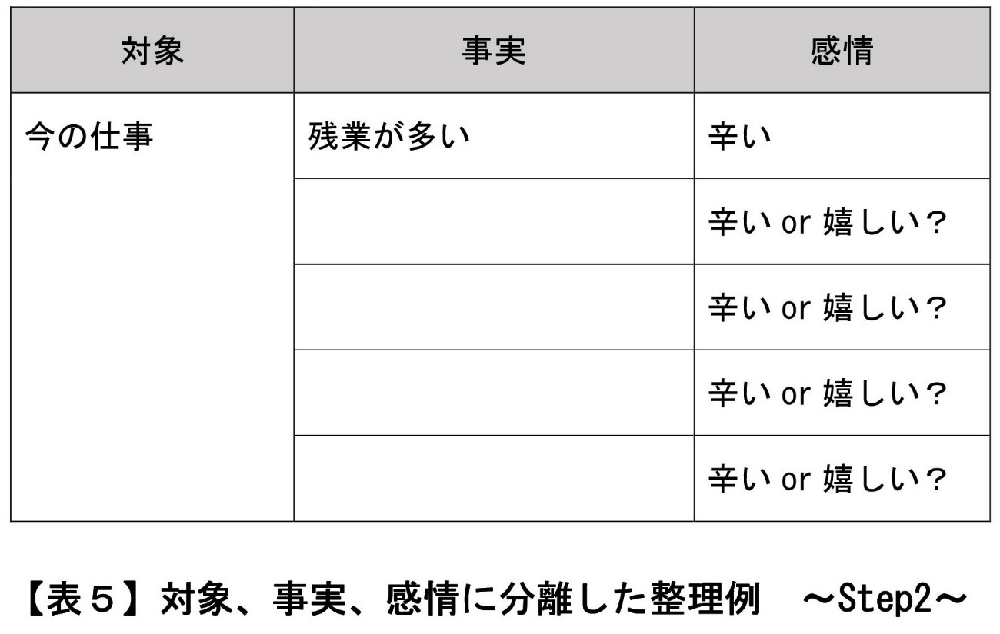

| ＜実態解明型＞恋活前のセルフチェック１【知人→恋人候補編】後編: 意中の30歳以上の女性から恋人候補に選ばれるために Luff up (Passlead Lab) | |
| 深沢 涼 & 植松 優奈 | |
| pasurido (2015) | |
＜ 実態解明型＞ 恋活前のセルフチェック１【知人→恋人候補編】後編
◆リンク用語の再掲
前編で用いた用語のうち、後編にてリンクを用いているものについて、以下に、用語の定義を再掲させて頂きます。
本書における 「初対面」とは、出会いのきっかけが何であるかを問わず、二人きりで会うことを約束した上で初めて二人きりで会う機会のことを意味します。
第４章 恋活前セルフチェック【恋人候補版】
【第１節】ネガティブ要因のチェック
２．内面要素（ネガティブ要因）
（１）がっつき
最もネガティブ要因となる内面要素は「がっつき」です。
ダメな内面要素の筆頭に書いたのは、近年男女の出会い、特に職場やサークル等のリアルコミュニティで既知の女性と初めて１対１で会う場合やＳＮＳでの出会いにおいて、女性が呆れる男性の態度として、頻繁に見られる傾向があるからです。以下、具体的に説明していきます。
■問題となる現象
初対面 で、相手の女性が未だ心を許していないにも拘わらず、
（ａ）１ｍ以内に接近してくる。
（ｂ）身体に接触してくる。
（ｃ）セックスに誘う。
以下、初対面 で、相手の女性が未だ心を許していないにも拘わらず、男性が女性に対してする（ａ）から （ｃ） のいずれかの行為のことを、「がっつき行為」と言います。
実は、私が懇意にしている30歳以上の恋活女性について、そのほとんどの方が、「初対面 の誘いに乗ったことに乗じて、いきなり、がっつき行為をしてくる男性」の割合があまりにも多く、男性との出会いに対する恐怖感や失望感を抱いていました。
本書を購入されるような恋愛理論を学ぼうとする真面目な方であれば、そのような方はほとんどいらっしゃらないとは思いますが・・・もし、そのような方がいらっしゃるのであれば、以下の説明をしっかりとお読み頂き、今後の恋活成功のために、がっつき行為が恋人候補に残るための最高のネガティブ要因であることを、しっかりと理解して抑えておいて下さい。
■恋人候補の判断に用いられる理由
がっつき行為は、30歳以上の恋活女性のほとんどの方が経験しています。行為をした恋活男性には、行為をされた恋活女性から「最低の人間」という評価が下され、かつ、この評価は永久に挽回不能となってしまいます。
「初対面 で（ａ）から（ｃ） のような行為を絶対にしてはいけない」ということではありません。相手の恋活女性が心を許している状態であれば、 たとえ初対面 で（ａ）から（ｃ） のような行為をしても、恋活女性に"がっつき行為"とは受け取られることはなく、許容されます。むしろ、（ａ）から（ｃ） のような行為によって、恋活女性は、自分自身に女としての魅力があることを確認することができるので、好ましく受け取ることでしょう。
これに対し、心を許していない場合には、（ａ）から（ｃ） のような行為は、恋活女性に"がっつき行為"と受け取られます。された女性からしてみれば、誰もが当然に嫌がる行為ですね。実際にがっつき行為を受けた恋活女性は、「私は、ただあなたに会いに来ただけで、あなたのための風俗嬢や奴隷になったわけではない。」のように、不快感を露わにしています。
また、客観的にも見ても、"がっつき行為"は、女性の同意が無くセクシャルな行為に及ぶ点で、犯罪に等しい行為です。女性から警察に被害届が出された場合には、セクハラ男、痴漢男として実名がインターネットを通じて世界中に配信され、人生が終了してしまいます。こうしたことは、恋活男性にとっても、何の得にもなりません。
ここで、恋活女性から「がっつき行為である」と判断された男性にしてみれば、次のような言い分があるかもしれません。
（イ）一般的に、30歳以上の女性は、それまでの人生において「男の命令に従うべき」という常識が形成されている。加えて、相手の恋活女性は、たとえ私に対して完全には心を許していなくても、二人きりで会うことに一旦同意したということは、多少は心を許しているはずである。だから、私の身体的な接近・接触やＨな誘いに対しても、逆らわずに容認するものであり、むしろ容認すべきである。
（ロ）一般的に、30歳以上の女性は、恋を求めているのであれば、「触られたい、セックスしたい」という気持ちを潜在的に持っている。相手の恋活女性が二人きりで会うことに同意したのは、肉体的な欲求不満が溜まっているからであろう。だから、相手の恋活女性は、たとえ私に対して心を許していなくても、女性自身の欲求不満の解消等のために、私の身体的な接近・接触やＨな誘いを許し、むしろ歓迎するはずである。
（ハ）実際の初対面 の場で、それまでの相手の恋活女性の言動や行動から、相手の恋活女性が自分に対して心を許してくれていると思っていた。
もし、（イ） と（ロ） の言い分に共感される読者の方がいらっしゃいましたら、30歳以上の恋活女性の異性からの身体接触に関する一般的な価値観を誤解されているものと思われますので、まず初めに、以下の説明をお読み頂き、誤解を解消して頂ければと思います。
＜ （イ） の言い分について＞
「大人の女性は、二人きりで男性と会うことに一旦同意したならば、その男性に触られることを許すものでしょう」という考え方は、女性の意思決定や撤回の自由を無視した発想です。こうした発想は、戦前の男尊女卑的な時代を背景として支持されたものです。現代の基本的人権の尊重や平等原則をベースとした法治国家としてのわが国では、このような発想や考え方を正当化するための根拠は存在せず、このような発想や考え方を推奨する教育もなされていません。よって、わが国の女性の中でこのような発想や考え方を正当であると感じられる方は、戦前の男尊女卑的な教育を受けてきた女性に限られ、現代社会では少数派であることを認識しておいて頂ければと思います。
＜ （ロ） の言い分について＞
女性の性欲露呈の積極的や性欲の旺盛さは、年齢で一律に決まるわけではありません。20代で旺盛な方もいる一方、30歳以上の女性で淡泊な方もたくさんいます。従って、相手の恋活女性が歳を重ねているからといって、身体的な接近・接触やＨな誘いを許容するハードルが下げるわけではありません。最近、雑誌やネット等で「熟女は、簡単にセックスさせてくれる」というノリの記事をよく見かけます。この記事は、そのセックスの相手が「熟女が心を許した男性」に限られるのなら、的を得た記事であると思います。「簡単にセックスさせてくれる主たる理由が"加齢による性欲旺盛"なのではなく、あくまでも心を許すことが先行していなければならない 」ということを認識して頂ければと思います。
ただ、確かに、女性の場合であっても、男性の場合と同様に、「あまり心を許していない異性であっても、肌を重ねたい」と思うバイオリズム期が到来することがあります。但し、女性の場合、このバイオリズム期が生じる頻度は、一人の女性の生涯において平均的に見れば、極めて稀で、しかも瞬間的です。よって、恋人を獲得するために「女性のバイオリズム期を狙って、成り行き的に恋人関係になる」という手法を採る男性にとっては、女性に対する初対面 での身体的な接近・接触やＨな誘いは正当なアプローチであると思います。但し、このような手法の成功率は極めて低いことから、普遍的な恋愛マニュアルとしての本書では扱いませんので、予めご了解ください。
一方、（ハ） のような言い分に共感される読者の方は、多数いらっしゃるのではないかと想像します。一般に、男性は、年齢を問わず、「好意を抱いている女性の自分に対する些細な言動や行動から、その女性が自分に対して好意を持っているものと思い込み易い」という性質を持っています。こうした些細な言動や行動の一例として、二人きりで会うことに応じてくれたこと、自分の発言に対する回答の内容が否定的なものでないこと、肩を触ってきたこと、ジュースの飲み回しをしたこと等を挙げることができます。加えて、女性に対する性的関心が高い男性の場合には、実際の恋活女性との初対面 の場で、自らの性的欲求を満たしたいという気持ちを抑えられず、相手の恋活女性に対して性的な行為をすることを自分自身の中で正当化するために、「相手の恋活女性は、自分に対して心を許してくれているだろう」と思い込んでしまうことがあります。
こうした各種の"思い込み"に基づいて相手の恋活女性に（ａ）から （ｃ） のような行為をしたら、相手の恋活女性から嫌がられた（＝相手の恋活女性が自分に対して心を許してくれていなかった）」ということは、男性に生じ易いミスであると思います。
このミスを防止するためには、以下の方法Ａ又は方法Ｂのいずれかをとる必要があります。
【方法Ａ】恋活男性が、自分の勝手な思い込みでなく、「相手の恋活女性が実際に心を許してくれている」ということを見抜く技能を身に付ける。
【方法Ｂ】恋活女性は初対面 では心を許さないものとみなして、恋活男性は初対面 では（ａ）から （ｃ） のような行為をしない。
■恋人候補残留水準
☆ 前述の【方法Ｂ】 に基づき、恋活女性は初対面 では心を許さないものとみなし、初対面 では（ａ）から（ｃ）のような行為をしないことをデフォルトにして下さい。
【方法Ａ】 をとることができれば理想です。しかし、【方法Ａ】 をとるためには、「恋活女性の言動や行為から、その真意を見抜く」という極めて高度な技能と女性的な思考回路が要求されます。よって、"恋人候補に残る"という恋愛活動の入口の基礎的事項を記載する本書では、【方法Ａ】 のような難度の高い手法を推奨致しません。失敗した時に恋人候補から外されるリスクが高いからです。
ただ、アグレッシブな恋活男性の中には、「【 方法Ｂ 】 のような紳士的な方法では、自分自身を女性の印象に残すことができない。それよりも、押しや攻めにより、潜在的な接触欲求を引き出して、女性をその気にさせたりした方が良いのではないか？」と思われる方もいらっしゃると思います。このようなアグレッシブな方法には、「恋活女性の真意の理解」のみならず、「積極意思を持っていない恋活女性に対し、言葉や行動によって積極意思を形成させる」という更に高度な技能が要求されます。この技能の内容は、ターゲットとする相手の恋活女性の現在及び過去の環境や人生経験によって異なるものであるため、"どの恋活女性にも対応できる"という普遍化が困難です。故に、単にあり得る技能の内容を皆様に書面上で示すだけでは、恋活成功率のアップにはつながらず、技能を使う相手や使う場面を間違えた場合には恋活失敗にもつながってしまいます。よって、このような相手の恋活女性によって異なる恋愛技能については、恋活成功のための一般的・普遍的な事項を記載する本書では避け、皆様の実際の個別具体的な事例を通じて、私の 運営する サイト にてお伝えしていきたいと考えております。
思うに、超プレイボーイである男性を除き、30歳以上の平均的な恋活男性にとって"初対面 で最も大切なこと"は、一気に恋人として選ばれてその日にセックスすることではなく、恋人候補に残る（＝恋人候補から除外されない）ということであると考えます。恋人候補に残らなければ、恋人に向かって進めない、即ち、セックスもできない からです。初対面 で接触欲求の引き出しにチャレンジするのは、チャレンジが凶と出る可能性も高く、凶と出た時に恋活男性が負う不利益（＝恋人に向かって進めず、永久にセックスできない。痴漢扱いされる。）があまりに大き過ぎるので、避けることがクレバーであると思います。
■実行メニュー
恋活女性との初対面 では（ａ）から （ｃ） のような行為をしないようにするためには、恋活男性が、恋活女性に相対した時に、そのように心掛ければ十分であり、日々の実行メニューとして行って頂くものはありません。
ここからは余談ですが・・・
もし恋活男性が初対面 で相手の恋活女性を気に入った時には、いつかは（ａ）から（ｃ） の行為をしたいと思うはずであり、この行為をする際には、自身の欲求を満たすために、「相手の女性が心を許している」という判断を正確にすることが必要になります。
加えて、相手の恋活女性も恋活男性のことを気に入った時には、いつかは（ａ）から（ｃ） の行為をされたいと思うはずであり、この場合には、男性は、相手の女性の欲求を叶えるために「相手の女性が心を許している」という判断を正確にすることが必要になります。
つまり、「相手の女性が心を許している」という判断を正確にすることは、恋愛関係への進展のために男性に課されている重要な使命なのです。
しかしながら、「相手の女性が心を許している」という判断の根拠となる資料は、「相手の女性の言動や行動から推定される内心」という曖昧な性質のものになります。また、恋活女性の言動や行為は、恋活男性にとっては、その意図が不明でミステリアスなものであることが多いものです。よって、「相手の女性が心を許している」という判断には、必然的に誤りが生じ易くなります。皆様も、これまでに、次のような苦い思いをされた経験が多々あるのではないでしょうか。
・恋活女性のその気が無い言動や行為を、その気が有るものと誤解し、ホテルに入ろうと思ったら、キレられたり、泣かれたりしてしまった。
・恋活女性のその気が有る言動や行為を、不本意にも見逃してスルーしてしまい、そのまま手を出さずにいたら、他の男性と付き合うと言われてフラれてしまった。
こうした判断の誤りを失くすためには、【方法Ａ】 のところで既述した「恋活女性の言動や行為から、その真意を見抜く」という能力が必要になります。
この能力は、恋人候補に選ばれた後から恋人になるまでの間においては、その発揮を必要とする場面が何度も生じます。そこで、この能力を身に付けるために不可欠なコミュニケーションベースについて、私の別書である「恋活前のセルフチェック２【恋人候補→恋人編】」 に記載しております。ご興味のある方は、是非、お読み頂ければと思います。
（２）下ネタ
２番目にネガティブ要因となる内面要素は「下ネタ」です。
対人関係における下ネタは、お互いにフランクな関係を目標とする場合には、そのような関係を築いていく過程において、必要な場面も多々あるものです。こうした対人関係における下ネタのプラスの効用については、特に人脈づくりの経験を重ねてきた男性の方は、肌で実感されているのではないでしょうか。
しかしながら、下ネタの許容範囲は、人によって、価値観や慣れ、相手との関係等による幅があり、使うべき相手や場面を間違えると、マイナスの効用を奏し、相手に不快感を与えてしまいます。
このように、下ネタは、いわば、人間関係において、「予測のできない副作用のおそれがある特効薬」であり、その取扱いや処方には、自分自身の意思のみならず、周囲の状況をも加味した慎重な判断が必要になります。
特に、共に恋愛目的を持つ男女が相対する場では、恋愛はその発展形として性的行為が予定された関係であることから、性的行為に関連する話題について、一定の許容性が認められます。こうした許容性に基づいて性的行為に関連する話題を自ら相手に提供したときに、相手に「良い下ネタ」と捉えられて関係がフランクになれば良いのですが、その反面、相手に「悪い下ネタ」と捉えられて不快感を抱かせてしまうという悪い結果を招致するリスクもあります。
ここで、私が近年関わってきた30歳以上の恋活男性、恋活女性の傾向を統計的に分析してみますと・・・
まず、30歳以上の恋活男性の場合には、初対面 の恋活女性の前で、「（下ネタ以外には話題が無いくらいに、）下ネタを頻繁に使う人」と「下ネタを全く使わない人」にはっきり分かれます。
一方、30歳以上の恋活女性の場合には、男性からの下ネタの許容性は、「相手の男性に恋愛感情的な好意を抱いているかどうか」によって変わります。「恋愛感情的な好意」ですので、「友達的な好意」では足りません。大半の恋活女性は、「自分が恋愛感情的な好意を抱いている男性の下ネタはＯＫだけど、そうでない男性の下ネタについては、"あなたとはそういう性的なことを想像することが全くできないにも拘わらず、下ネタによって強制的に想像させられてしまっている感覚に陥る"ので、極めて不快である。」 という価値基準を持っています。そして、下ネタのキツさの許容範囲は、相手に抱いている恋愛感情的な好意の度合いに比例します。
よって、初対面 では、恋活女性は、相手の恋活男性に対する恋愛感情的な好意を未だ抱いていないことが多いので、恋活男性からの下ネタを不快に感じる可能性が高いということになります。もちろん、下ネタの内容にもよりますが。
特に、これまでに恋愛に関して問題意識や上昇志向をあまり持ってこなかった恋活女性の場合には、30歳以上の女性であるものの、軽い内容の下ネタにも全く慣れていない女性や、「下ネタは、結婚目的なら使ってもいいけど、恋愛目的の場合には綺麗なイメージを壊してしまうので使うべきではない」というロマンチックな意見を持つ女性が意外と多いです（推定値： 30歳以上の恋活女性全体の10％ 程度）。このような女性に対する初対面 での下ネタは、その内容の如何を問わず、即座に恋人候補から除外されてしまいますので、注意が必要です。
読者の皆様が下ネタを頻繁に使う方である場合には、「オトナの男と女の出会いの場では、もう子供じゃないんだから、下ネタをオープン感覚で展開し、お互いの下ネタに呼応し合うのが当然でしょう。」と考えられるかもしれません。しかし、以上に説明した通り、そのような考えを受け入れる30歳以上の恋活女性は、現在の恋愛市場では極稀で少数であることを認識しておいてください。確かに、従来の男性上位の社会では、こうした男性のペースでの下ネタを受け入れるべきという考え方は、女性による下位者としての受忍によって正当なものであるとみなされていたかもしれません。しかしながら、現在の恋愛市場においては、こうした考え方は的外れであり、仮に固持すれば、時代錯誤者 として、30歳以上の恋活女性の恋人候補から積極的に除外されてしまいますので。
さて、このように「恋活女性は、恋活男性の下ネタを、絶対的かつ永久に禁止している訳ではない。」という前提において、恋活女性とのファーストコンタクトである初対面 の場面では、どのような内容の下ネタが恋人候補に残るためのネガティブ要因となるのか？このことについて、以下に説明を進めていきたいと思います。
■問題となる現象
下品又は欲望丸出しと感じられる内容の下ネタを、不快感を示してもなお話し続けている。
この現象において、注意すべき点が２つあります。
まず１つ目は、「下品又は欲望丸出し」と感じるのは、相手の恋活女性であるということです。即ち、話す側の恋活男性が「下品又は欲望丸出し」とは思っていなくても、受け手側の恋活女性がそのように感じればアウトである、ということです。そして、恋活女性が「下品又は欲望丸出し」かどうかを感じる基準は、恋活女性ごとに異なり、また、同じ恋活女性であっても、下ネタを言われた時、場所、言われた時の気分によっても異なります。
更に、下ネタ許否の他の基準として、次のような「恋活女性が、発言した男性に対して抱いている恋愛感情的な好意」があります。
・恋愛感情的な好意を抱いている状態での発言ならＯＫ。
・恋愛感情的な好意を抱いていない状態（例えば、友達的な好意しか抱いていない状態）での発言なら、不快感を抱き、嫌悪に傾く。
・嫌悪を抱いている状態での発言なら、完全に恋人候補から除外
これらのことから、下ネタで恋活女性の支持を得るためには、女性の価値観や心理状態を察した上での非常に高度な使い分けが求められることがわかりますね。
次に、２つ目の注意点は、「恋活女性が不快感をどのように示すかは、恋活女性ごとの表現手法による」ということです。
はっきりと言葉で「下ネタはやめて」と言ってもらえればいいのですが・・・初対面 でそのように言ってくれる恋活女性はごく稀です。
30歳以上の恋活女性にとって、初対面 の恋活男性は、仕事等のパブリックモードで会う人よりは身近には感じているものの、現時点では「どこの馬の骨だかわからない外様」として扱い、プライベート領域には未だ完全に入れていません。また、30歳以上の恋活女性は、初対面 の場において、恋活男性と比べてはるかに冷静であり、相手の男性に対する先入観をほとんど抱くことなく、目の前に映るものや目の前で起きていることを、自身の常識で静かにジャッジしていきます。
このため、恋活女性は、初対面 の場で恋活男性から放たれた下ネタによって相当の不快感を抱いたとしても、差し障りの無い相槌ちの言葉を放ちながら、「目が笑っていない愛想笑いをする」か「呆れた笑みで、スルーして流す」のどちらかの振る舞いをするものです。
よって、下ネタで恋活女性の支持を得るためには、こうした女性の振る舞いから自身の失敗を読み取れる能力 が求められることがわかりますね。女性が笑みを浮かべているから喜んでいるのだろうと解釈して下ネタを更に続けるような短絡的な思考では、恋活女性から恋人候補に残されることは、まず無いでしょう。
■恋人候補の判断に用いられる理由
さて、「恋活男性が、下品又は欲望丸出しと感じられる内容の下ネタを、不快感を示してもなお話し続けている。」と感じた恋活女性は、どのような理由で、その恋活男性を恋人候補から除外してしまうのでしょうか。
「下品だから」とか「性的関係を急かされそうだから」とかの直接的かつ単純な理由ではありません。
「楽しさや笑いのツボが合わない。」 と判断して、恋人候補から除外するのです。
恋活男性が初対面 で下ネタを話す目的は、たいていの場合、相手の恋活女性を楽しませて心の距離を縮めるためです。つまり、恋活男性は下ネタを「相手の女性が楽しんでいる」と思って話しているのです。
こうした男性の心理状態は、相手の恋活女性には、ほぼ間違いなく読み取られています。その上で、相手の恋活女性は、その話を不快に思った場合には、「相手の男性は、私が楽しんでいると感じていたようだけど、私は楽しいと感じなかった。楽しさや笑いのツボが合わないのでは・・・。」というように捉えます。
30歳以上の恋活女性のほとんどの方は、恋人に求める大切な条件の１つとして、「楽しさや笑いのツボが合う」ということを求めています。そして、初対面 では、この条件を満たすかどうかについては、ニュートラルな状態で臨んでいます。このため、恋活女性は、下ネタによる不快感を抱き続けると、「楽しさや笑いのツボ」の相性についての判断状態がニュートラルから大きくマイナスに振れ、「この男性とは発展性が無い」というところまで一気に判断を進めてしまうのです。
■恋人候補残留水準
これまでの説明で、下ネタは、男女の出会いの場面においても、「予測のできない副作用のおそれがある特効薬」であるということを、改めてご理解頂けたのではないかと思います。
思うに、下ネタは、人間関係を深める上で必要なことも多いとは思いますが、男女の出会いの初対面 という場面では、恋人候補に残るために絶対的に不可欠な話題とまでは言えないものです。
よって、恋人候補残留水準としては、次の２つとなります。
☆ 初対面では下ネタを使わない。
☆ どうしても下ネタを使いたい場合には、「好みの外見のタイプ」の話題をきっかけにして、上品でソフトな表現から徐々に入りつつ、絶えず相手の不快感が表情や反応に出ていないかどうかを見定める。
但し、二番目の水準については、女性心理を読み取るレベルの高い読者の方向けに一応記載しましたが、そうでない読者の方には推奨しません。これまでに説明してきましたように、男女の出会いの場において、恋活男性が初対面 の恋活女性の隠れた内心を見抜くことは、訓練された恋活男性を除いては、とても難度が高いことであるからです。例えば、恋活女性としての体の象徴的な部位（顔や胸等）についての話は、初対面 の場では、よほどの達人でない限り、話してはいけません。こうした部位については、恋活女性自身が隠れたコンプレックスを抱いている可能性が高く、この部位についての話をすることにより、恋活女性に「自分のことを否定された」のように受け取られ易いからです。
■実行メニュー
さて、読者の皆様が、既述した一番目の水準「初対面 では下ネタを使わないを選択されるのでしたら、初対面 の場では下ネタを使わないようにしようという意識すればよく、これ以外に、日々なすべきトレーニングは何もありません。
しかし、初対面 以降、相手の女性との発展を目指すのであれば、いずれは、下ネタを相手の女性から喜ばれるような形で効果的に使っていきたいですね。なぜなら、「セックスしよう」は究極の下ネタですから。
そこで、少々応用編になりますが、どんな下ネタなら許容されるのかということについて、大枠のポイントの理解を進めておきたいと思います。これにより、初対面 の場で、「絶対に下ネタを使っちゃいけないと過度に緊張してしまったがために、相手の女性からも不自然に感じられてしまった（例えば、「男性としての機能が不能なのでは？」）」といった事態を避けることもできますので。
既述したように、恋活女性が下ネタを許すor許さないの基準として、「発言した恋活男性に対して抱いている恋愛感情的な好意」があります。
さて、この相手の恋活男性に対する「恋愛感情的な好意」とは何を意味するのか？
相手の恋活男性に対する「恋愛感情」にまで至らなくても構いません。また、相手の恋活男性に対する「信頼の度合い」とは無関係です。
答えは、相手の男性に対して「下ネタを話していても、嫌味や嫌らしさを感じない」 という感情を抱いていることです。
恋活女性は、こうした感情をどんな男性に対して抱くのか？
外見の良し悪し、頭の良さ、性格の良さ、お金持ち・・・全く関係ありません。
答えは、 「どの女性にとっても一般的に価値が高い内面であって、かつ、相手の女性本人にとって重要かつ有益な内面」を持っている男性です。
恋活女性は、こうした内面 を持つ恋活男性を、「性別を超えて、自分にとって必要な、お金では買えない貴重なものを持っている人物」 のように認識します。よって、恋活男性は、こうした内面 を相手の恋活女性に対してアピールし、恋活女性から性別を超えた重要人物であるとの認識を得た後に、恋活女性に下ネタを話すようにしてください。すると、話された恋活女性にとって、恋活男性からの下ネタがその恋活男性に対する評価においてとても小さく軽微なことのように感じられ、下ネタを軽い話題として楽しく扱うことができるようになるのです。
なお、本書の内容には、こうした内面を持つための基礎的な事項が多分に含まれていますので、焦らずに、まずは本書に書かれていることを１つ１つマスターしていって頂ければと思います。
恋活女性と向き合った時にどうしても下ネタが出てしまいがちで不安な読者の方は、日々、以下の（ａ）から（ｃ）のトレーニングを実践してみて頂くことをお勧めします。
☆ （ａ）下ネタの内容的な許容水準として、職場の同僚女性のような共通のコミュニティに属する女性や営業目的の女性に認められた水準を用いないようにして下さい。
こうした女性は、あなたに少なからず気を遣って、緩い許容水準で認めてあげようとしています。こうした水準を捨て去って初めて、恋愛市場で通用する水準を取り入れられる頭になりますので。
☆ （ｂ）身近な女性に下ネタを使うことを止めてみて下さい。
下ネタは、習慣になると、それに対する罪悪感も麻痺してきます。この麻痺した感覚を取戻し、「下ネタに依存しない会話」を実践してみましょう。
☆ （ｃ）下ネタに替わる話題を豊富にして下さい。
上述の（ｂ） を実践した場合には、女性との会話において下ネタが占めていた部分が空白となります。この空白部分で女性に話す話題（＝女性が好みそうな話題であれば、何でも構いません）を、各自で考えてみて、読者の方と同じコミュニティに属する女性の方に実践してみて下さい。その後、この同じコミュニティに属する女性から、「最近、会話がイイ感じに変わったね」と改めて言われたら、貴男の会話のレベルが恋愛市場で通用する水準に近づいていると理解して良いと思います。
（３）無言
３番目にネガティブ要因となる内面要素は「無言」です。
男性の中には、「人見知りをし、初対面 の女性と話すことができない」という方もいらっしゃいます。しかし、このような男性のほとんどは、既に何度も会っている女性となら話すことができます。つまり、「初対面 の女性と話すことができない」という問題は、初対面 の後に、いつのまにか自己解決されているのです。このことは、初対面 の女性と話すことができない要因が、単なる「緊張、慣れ、苦手意識」に過ぎず、対人能力や会話技術のような高度なものではないことを表しています。
本書のテーマは、「初対面 の女性と話すことができるようになる」ということではなく、「初対面 で恋活女性の恋人候補に残れるようになる」ということです。そのために男性に必要になるのは、「初対面 で流暢に話をすること」ではなく、「自分の無言によって相手の恋活女性にかかる負担を軽減してあげること」 なのです。まずは、このことを念頭に置いて頂いた上で、以下、具体的な説明を進めていきたいと思います。
■問題となる現象
初対面 において、無言の男性に対し、恋活女性自身が、（ａ）話題を考え、（ｂ）話題を相手に振り、（ｃ）振った話題をリードしていくことにより、疲れてしまう。
■恋人候補の判断に用いられる理由
30歳以上の恋活女性のほとんどの方は、たとえ相手の男性が年下であっても、精神面や会話を含む行動面において男性がリードしてくれることを理想としています。
この理想と真逆の自体が相手の恋活男性との間で初対面 から起きたら、どう思うでしょうか？先が思いやられ、先が見えないので、当然、恋人候補から除外しますよね。逆の立場になれば理解できることと思います。
■恋人候補残留水準
☆ 恋活女性に、「 （ａ）話題を考え、（ｂ）話題を相手に振り、（ｃ）振った話題をリードしていく」という負担をかけないように、行動すること
もし、"問 題となる 現象 " に当て嵌まる男性の方が、逆に、無言の恋活女性に対して（ａ）から（ｃ）の負担 を課せられたとしたら、どのくらい大きなストレスが生じるかを想像してみて下さい。そのくらい大きなストレスを抱えて、相手の恋活女性は帰途についているのです。
こうして相手の女性を疲れさせることは、決して恋活男性の本意では無いと思います。
そうであれば、自らの「女性に負担をかけないような行動」を通じて、恋活女性をリードしていきましょう。
この「女性に負担をかけないような行動」として、具体的なものを以下の（イ）から（ホ）に列挙してみましたので、参考にしてみて下さい。
（イ）会う日のスケジュールについて、最初に会う場所を映画館等の「話さなくてもいい場所」にし、喫茶店等の「話さなければならない場所」は最後に行く。
（ロ）会う日の早々に「話さなければならない場所」に行かなければならない場合には、ビデオスクリーンやショー、動物等による演出が催されている店を選ぶ。
（ハ）相手の女性には、話の負担を負ってもらう分、場所選びの負担については一切かけさせないようにする。例えば、相手の女性の細かな好みに合った場所をその場で即座に提案できるように、場所のガイドを完璧にしておく。
（ニ）「話さなければならない場所」に行ったら、まず、相手の女性に、「私は話すのが苦手なので、負担や迷惑をかけちゃうかもしれない。ごめんなさい。」のように、カッコつけずに本音を打ち明ける。
（ホ）「話さなければならない場所」に行ったら、相手の女性に対し、「短い言葉＋豊かな態度や表情」を基本セットとして表現していく。
これらの「女性に負担をかけないような行動」をする際の心構えとしては、以下の通りです。
・会話の負担をしてくれる相手の女性の気持ちを理解し、相手に感謝する。
・相手の女性に対し、会話の負担を上回るほどのメリットを提供する。
・不得手なことを本音で打ち明けて、まずは恋活男性が自分自身の気持ちをリラックスさせる。
・言葉で足りない分を態度・表情で意思表示して、相手の女性の負担（例えば、本来自分が言葉で伝えるべきことまで相手の女性に話させてしまうこと）を軽減すると共に、相手の女性に安心感を提供する。
貴男がこうした行動と心構えをセットにして恋活女性に応対していけば、「無言による負担をかけないように一生懸命配慮してくれている」ということが恋活女性に伝わります。 この一生懸命さが伝われば、恋活女性は、貴男を口数が少ないというだけの理由で恋人候補から除外することはなく、むしろ、「優しさや誠実さがある」というプラスの評価をするでしょう。
■実行メニュー
初対面 での恋活女性の会話負担を減らすために、無口な男性は、日々、どんなトレーニングをすべきなのでしょうか。
そもそも、恋人関係は、お互いに「（ａ）話題を考え、（ｂ）話題を相手に振り、（ｃ）振った話題をリードしていく」などということをしなくても、スムーズな意思疎通がし合える関係です。
しかし、このような関係は、即座にできるものではありません。
お互いに「伝える」ことを繰り返し、お互いの人間性の理解を進めるというプロセスを経た結果、何もしなくても「伝わる」ようになるのです。
こうしたプロセスを踏んでいけるように、
「自分の人間性をわかり易く伝える技術」、「相手の人間性を自然に伝えさせる技術」という２つの技術を磨くようなトレーニングを、日々、意識して行って下さい。こうしたトレーニングをしておけば、初対面 における意思疎通が円滑となり、相手の女性の会話負担も自ずと減ることが期待できます。トレーニング方法については、様々な専門家の書籍が販売されていますので、各自に合った書籍で学習されることをお勧めします。
なお、「伝える」方法は、必ずしも言葉である必要はありません。私の経験からは、言葉よりもむしろ表情や行動の方が、女性に対し、自分の人間性が良く「伝わる」と思います。
この２つの技術が自然に磨かれる場として、「自分自身の悩み事を相手に相談する」という場があります。こうした場では、悩み事の話題を通じてお互いの価値観が双方向に伝わり合うことが期待できるからです。即ち、相談者は、自身の悩み事の内容のみならず、自分がどうしたいと思っているかという価値観を、被相談者に伝える必要があります。この伝えを受けた被相談者は、相談者に対し、一般的な意見のみならず、自分の価値観を踏まえた意見、相手の価値観を理解した上での意見までをも伝えてくれることがあります。よって、例えば、女性目線での意見をもらいたい相談事を予め準備しておいて、恋活女性との初対面 に臨むことも一案であると思います。但し、恋活女性の中には、「相手のことが未だよくわかってない段階では、相手の相談には乗りたくない。いい加減なことを言いたくないので。」という責任感の強い方もいらっしゃいますので、このような方には無理に相談しないようにご注意ください。
（４）自分のことを話さずに、相手のことばかり聞く
４番目にネガティブ要因となる内面要素は「自分のことを話さずに、相手のことばかり聞く」ということです。
ご存知の通り、現在は、プライバシー情報の他人への提供に関し、とてもナーバスな時代になっています。特に、女性は、ストーカー被害等の要因ともなるため、たとえ身近な人に対してであっても、自らの素性を他人に教えることについて警戒している方が多くなっています。
思うに、個人情報保護法が浸透する前の時代は、「自分のことばかり話して、相手のことを聞かない男性」が、女性から「自分本位である」として嫌われました。この価値基準は、今の時代においては、依然として当て嵌まるものの、女性にとって恋人候補から即座に除外するほどの悪さではありません。それよりも、現在の社会では、「自分のことを話さずに、相手のことばかり聞く男性」という逆パターンの方が、世間で個人情報を利用された殺人や詐欺、暴露等の事件が後を絶たないことから、女性にとって遥かに危険意識が高くなっています。
このような時代背景から、恋愛の場面においても、出会いから安定した恋人関係に進展するまでの間において、「"自分のことを話す量と質"と"相手のことを聞く量と質"のバランスを、いかに相手に応じて取り続けていくか」ということが、恋愛成就のための非常に重要なポイントになっています。
このような重要なポイントのうち、本書では、恋人候補から除外される要因となる「自分のことを話さずに、相手のことばかり聞く」いうことの実態と対策に絞り、以下に説明していきたいと思います。
■問題となる現象
問題となる現象には、ケース１、ケース２の２つの場合があります。 ケース１は、初対面 に先立ち、恋活女性が、以下の恋活男性の情報（ａ）から（ｅ） の全てを、相手の恋活男性から面と向かって直接に伝えられていない場合です。 ケース２は、初対面 に先立ち、恋活女性が、以下の恋活男性の情報（ａ）から（ｅ） の全てを、相手の恋活男性から面と向かって直接に伝えられている場合です。
（ａ）氏名
（ｂ）住んでいる都市名
（ｃ）勤務先名
（ｄ）家族構成
（ｅ）携帯電話番号（メールアドレス、LINE ID等では不十分）
＜ ケース１＞
初対面 の早い段階で、恋活男性が、 （ａ）から （ｅ） の全てを、自分から恋活女性に教えず、教えられない場合には、その理由を明確に恋活女性に伝えない。
＜ ケース２＞
恋活男性が、恋活女性の現在の日々の朝から晩までの行動スケジュールを、恋活女性に細かく聞いてくる。
■恋人候補の判断に用いられる理由
＜ ケース１について＞
恋活女性は、初対面 の場に臨むに際し、「相手の恋活男性がどんな性質の人なのかがわからない」という大きな不安を抱いています。従って、初対面 の場で、（ａ）から（ｅ） のような素性の基本要素を率先して恋活女性に伝えてこない恋活男性は、恋活女性から、「女性の不安を察していない」又は「女性の不安を少しでも解消してあげようという誠実さが見えない」 のように評価されます。こうした評価は、更に、「素性の基本要素を伝えてこないということは、この恋活男性には何か黒い裏があるのでは・・・」のような恋活女性の悪い想像を掻き立て、恋活女性を余計に不安にさせてしまいます。素性に不安がある恋活男性とは、当然、お付き合いする気にはなれませんね。
なお、メールアドレスやLINE IDは、変更や削除が容易であるため、それらのみを恋活女性に教えても、恋活女性には「勝手に音信不通にされるのでは・・・」という不安が残ります。やはり、変更がしにくい携帯電話番号を併せて伝えることが誠実でしょう。
＜ ケース２について＞
恋活女性は、好きな男性が自分に関心を持ってくれることは嬉しいのですが、そうでない男性が自分に関心を持ってくれることについては、冷ややかに一線を引きます。好きではない男性に対しては、相手の男性の全てを受け入れることができないため、これ以上向かってきてほしくない位置に一線を引くのです。
それでも、恋活男性は、相手の恋活女性を好きになると、たとえ初対面 であっても、夢中になって狩猟本能を発揮し、この一線を越えようと向かってくることがあります。恋活女性も、そのことをわかった上で一線を引きます。よって、恋活女性は、好きではない恋活男性が一線を越えるように向かってくること自体については、恋活女性自身に魅力があることの証でもあることから、門前払いするほどに問題視はしません。
問題になるのは、好きではない男性が恋活女性に向かってくる手法が、 「恋活男性から恋活女性への情報発信（例えば、「好き」という意思表示を何回もする）」ではなく、専ら「恋活男性による恋活女性の情報の取得」という手法でなされる時 です。この典型的な例が、「相手の恋活女性の現在の日々の朝から晩までの行動スケジュールを細かく聞いてくる」というものです。恋活女性としては、「まだ初対面 で好きでもないのに、なんで、あなたにそんな私のプライベートを事細かに教えなきゃいけないの？そもそも、何のためにそんな細かなことを聞くの？」という不穏 な気持ちになります。それだけでなく、「女性を奴隷のように管理するような人なのでは？」、「そんなことまで今の段階で教えてしまったら、私が好きになることができずに恋人に発展しなかった場合には、その後にストーカーになるのでは？」のような恐怖感 にも発展してしまいます。
もちろん、恋活男性の立場に立てば、「盛り上がる話題が無かったので、相手の恋活女性の生活スタイルのことを聞いてみただけなんだけど・・・」という言い分もよくわかります。ただ、これほど世の中で「未練がましい男性が元交際相手の女性を傷付ける」という事件が頻繁に起きていると、恋活女性の立場に立てば、ストーカーが実現できてしまうようなプライバシー情報を初対面 で聞かれて疑心暗鬼になってしまうのも、やむを得ないことであると思います。
■恋人候補残留水準
＜ ケース１の場合＞
☆ 初対面においては、恋活男性自身の（ａ）から（ｅ）の全てを、なるべく早いタイミングで恋活女性に伝えて下さい。
☆ その後の流れや質問によっても、恋活女性が自身の（ａ）から（ｅ）を自発的に言わない場合には、それ以上、聞き出さないようにして下さい。
恋活男性が（ａ）から（ｅ） のような素性の基本要素を初対面 においてなるべく早くに率先して伝えることで、恋活女性は、少し不安が解消し、以後の恋活男性の話や行動を正面から受け止めようという真摯な気持ちになります。特に、恋活男性が自分の勤務先の名刺を恋活女性に渡す行為は、恋活女性に安心感のみならず、「私のことを信じてくれた」という感謝の気持ちが生まれます。こうした真摯な行為をされたことにより恋活女性の「恋人候補から除外しようという意思」にブレーキがかかることも、現実には多々あります。
なお、（ａ）から（ｅ） のような素性の基本要素について、恋活女性に対して「私が言ったのだから、あなたも言ってください」的な強要をすることは、くれぐれもしないようにして下さい。人には、それぞれに、意思決定の自由がありますので。言わない理由を詮索したりすることなく、「きっと、まだ自分に対する信用が発展途上なんだろうな。まあ、いいか。」という感じで大らかにどっしりと構えましょう。
＜ ケース２の場合＞
☆ 「常日頃、いつ、どこで、何をしている」というスケジュール情報については、恋活女性に聞きたければ、まず恋活男性自身のスケジュール情報を克明に伝えて下さい。
☆ その後の流れや質問によっても、恋活女性が自身の情報を自発的に言わない場合には、それ以上、聞き出さないようにして下さい。
先の説明と重複しますが、初対面 でスケジュール情報を詳細に聞き出すことは、恋活女性から怪しまれ、確実に恋人候補から除外されますので、止めておきましょう。そもそも、恋活女性は、初対面 をお互いにリラックスした楽しい雰囲気で過ごしたいと思うものであり、聞き込みや取り調べをされているような緊張した雰囲気 では、恋活女性に楽しかったという思いが残りません。また、スケジュール情報についても、恋活女性に対して「私が言ったのだから、あなたも言ってください」的な強要をすることは、くれぐれもしないようにして下さい。
■実行メニュー
情報化社会の怖さを知っている30歳以上の方であれば、ほとんどの方がここまでの説明内容を理解し、以後の初対面 からは、恋人候補残留水準に記載したような行動が無理なくできるものと推察しています。よって、日々実行すべきトレーニングとしてご紹介するものは、特にありません。
しかし、読者の方の中には、相手の恋活女性が、貴男のプライバシー情報を聞いておきながら、自分のプライバシー情報については教えなかった場合に、この恋活女性に対して、腑に落ちない思いや、「平等じゃなく、ずるい」、「自分のことを信頼してくれていない」という思いが残る方もいらっしゃるかもしれません。
そんな方は、次のようなことを想像してみて下さい。
もし、貴男が、今の時代において、「男性から人気のある美しい女性」であったとしたら、初対面 で会った男性に分け隔てなくプライバシー情報を教えますか？
教えませんよね。
信頼できそうな男性のみに教え、教える範囲については、その時点での男性に対する信頼の度合いに比例するのではないでしょうか。
今の時代、「初対面 におけるリスクは、男性よりも女性の方がはるかに高い」ということを、今一度、理解してみて頂ければと思います。
（５）ウソ
最後５番目にネガティブ要因となる内面要素は「ウソ」です。
性別や年齢を問わず、ウソをつく相手は、信頼することができないものです。ましてや、最も心の距離が近い恋人という関係では、ウソをつく相手を恋人に選ぼうとはしません。
よって、「初対面 でウソをつかないように」という注意事項については、皆様も容易に理解することができると思います。
では、なぜ、ここで、私が、内面に関する５番目のネガティブ要因として取り上げたのか？
それは、男性と女性の間には、「ウソの許容性」に関する価値観のズレがあり、このため、現実の出会いの場面において、恋活男性が「ついても良いウソ」を恋活女性についた場合に、恋活女性が、「ついてはいけないウソ」をつかれたとして、恋活男性に対する不信感を抱き、恋人候補から除外してしまうようなケースが、非常に多く生じているからです。
男性の場合、社会経験を重ねている方ほど、ウソを「ついても良いウソ」、「ついてはいけないウソ」の２種類に明確に区別する傾向があります。即ち、ウソの中でも「ついても良いウソ」は許されるべきであるという価値観です。
ところが、女性は、このように明確な区別をされる方がとても少なく、ほとんどの方が「どんな内容のウソであっても、ウソはウソであり、ウソは許されない。」という価値観を持っています。（なお、女性の場合、こうした正の価値観とは真逆の負の内心を持っていることが往々にしてありますが、出会いの端緒では内心の露出がされることはほとんどありませんので、こうした負の内心については本書では取り扱わないことにします。）
恋活女性は、こうした「ウソの許容性」に関する価値観のズレによって恋活男性に対する不信感を抱き、恋人候補から除外しようとする場合に、恋活男性に対し、恋人候補から除外した理由として、「ウソをついた」という理由を伝えないものです。ウソかどうかは本人である恋活男性しかわからず、「ウソをついた」という断定ができないからです。このため、恋活男性は、恋人候補から除外された真の理由が「ついても良いウソをついたこと」であったことを、知ることができません。このため、読者の方のほとんどの方は、以下の私の説明内容について、「そんなの、聞いたことが無いけど・・・ホントかな？」と感じられるかもしれません。
以下の説明は、私が懇意にしている多数の恋活女性からの「恋活男性は初対面 でのウソが多い」という実経験に基づいて記載しております。こうした意見を聞いてみて、私自身も、「女性は男性のウソを見抜く力に非常に長けているな」と感心し、改めてウソは怖いなと思った次第です。
■問題となる現象
「ウソの許容性」に関する価値観のズレに関しては、様々な現象がありますが、恋人候補からの除外認定の要因として圧倒的に多かった現象は、次の現象です。
●恋活男性が、恋活女性に対し、自分のことをアピールしようとして、ついつい、自分のプロフィールや能力を、偽った又は誇張した内容で、恋活女性に伝えてしまった。恋活女性は、その後の男性の話や行動を観察した結果、「男性から伝えられたプロフィールや能力の内容は真実ではない可能性が高い」と判断した。
いかがでしょうか？
「本当のことを言うと、うまくいかなくなるから、偽って伝えておこう」、「多少は誇張しているけど、真っ赤なウソではない」・・・
このような恋活男性の行動は、特に恋活女性に対する好き度が高い場合には、この恋活女性に良く思われたいがために、ついつい取ってしまいがちな行動であると思います。
ここで、恋活女性は、「恋活男性のプロフィールや能力について、どんな些細なものであっても、偽ることや誇張することを絶対に許さない。」のように厳格に考えている訳ではありません。
ただ、「恋活男性のプロフィールや能力」の中には、ほとんどの恋活女性が共通に「偽ることや誇張することを許さない」と考えているもの があります。こうしたもののうち、「男性が偽りや誇張をしがち」であり、かつ、恋活女性から真実でないことを察知され易く、恋活女性による察知が恋人候補からの除外認定に直結するもの」の一例を次の表 ３ に列挙してみました。
■恋人候補の判断に用いられる理由
先の表３ に例示したものは、いずれも、「偽りや誇張の内容が、一般的に、女性が、男性の付加価値として認め易く、男性に対するハードルを下げるような内容であり、かつ、ハードルを下げるため以外に偽りや誇張をする理由が無いもの 」です。このような内容について偽りや誇張をされていたことを恋活女性が知った時には、「この男性は、私の心を自分に向けるために、私を騙した→卑怯、卑屈、不誠実 」と感じ、故に、恋人候補から即刻除外するのです。
■恋人候補残留水準
☆ 恋活女性がハードルを下げる事柄については、等身大で真実を語って下さい。
30歳以上の恋活女性は、相手の恋活男性に騙されないことに関しては、とても過敏です。このため、恋活女性は、自身のハードルを下げるような事柄について相手の恋活男性から説明を受けた際、表向きには説明内容を信じてハードルを下げるものの、内心ではハードルを下げることを保留し、その後の男性の言動や行動を観察して説明内容に矛盾が無いか等をチェックし続けていきます。 恋活女性は、こうしたチェックの結果、「ウソの可能性が高い」と推定すれば、ウソであるかどうかを恋活男性に確かめることなく去っていってしまいますので、取り返しのつかない事態にならないように、ご注意下さい。
■実行メニュー
30歳以上の男性で、他人にウソを率先してつくような方は、ほとんどいないと思います。よって、日々実行すべきトレーニングとしてご紹介するものは、特にありません。
「男性は、好みの女性の前では、自分の価値を高く見せようとして、ついつい誇張しがちである。しかし、その誇張は、後に女性に見透かされるものである。」
女性との出会いの際には、この言葉を思い出して頂ければ十分だと思います。
それよりも、前編を含む本章において、これまでに「ネガティブ要因」として列挙した他の１０個の要素、これから「どこにでもいる要因」として列挙していく９個の要素をクリアして頂くことをお勧めします。そうすることで、他の要素について自信がつき、恋活女性に対し今までしていたような誇張などをしなくても、恋活女性の恋人候補に残れるようになるからです。むしろ、自分の短所をカッコつけず素直に恋活女性に言えるようになり、言われた恋活女性において貴男に対する爽やかで男らしい印象が増すと思います。
【第２節】どこにでもいる要因のチェック
続いて、30歳以上の恋活女性にとって「どこにでもいる要因（空間を共にしてもよいが、恋愛対象としてはあり得ない→恋人候補から対象外 図１を参照）」となり得る要素について説明していきます。これらの要素は、初対面 後の恋活女性からの「どこにでもいるようなレベル」、「さえない、全くキュンとこない」、「二人で一緒にいるところを他人に見られたら、自分の評価が下がってしまう」、「会う時間がもったいない」というコメントにつながるものです。恋活女性に対していくら誠意や時間、お金を費やしても永久になびかない理由となる要素ですので、恋活にかける労力や時間、お金の無駄を防止すべく、恋活に入る前に必ずクリアしていって頂ければと思います。
「どこにでもいる要因」として列挙した要素は、次の外見要素４つ、内面要素５つです。外見要素、内面要素のいずれにおいても、番号の若い要素ほど重要度（＝女性の目に留まらない度合い）が高いものになります。
１．外見要素（どこにでもいる要因）
（１）髪
（２）服装等の身に着けている物
（３）車内の清潔さ
（４）喫煙の不一致
２．内面要素（どこにでもいる要因）
（１）器が小さい
（２）過去の自慢話が多い
（３）現在の保護介護欲求が高い
（４）現在を幸せと感じていない
（５）上から目線
それでは、順に説明していきます。
１．外見要素（どこにでもいる要因）
（１）髪
最もどこにでもいる要因となる外見要素は「髪」です。
この「髪」という外見要素は、既述したネガティブ要因には該当しません。よって、既述したように、例えば「髪が薄いこと」のみを理由として、30歳以上の恋活女性から門前払いされることはありません。薄い髪は、かつらの装着やスキンヘッド化等によって、恋活女性の好みに変えていくことが可能だからです。
なお、以下の説明においては、髪が清潔であることを前提として、論を進めていきます。
■問題となる現象
フロント部に年齢相応の毛量が無く、かつ、髪を美観的に手入れしている形跡がない。
■恋人候補の判断に用いられる理由
ご存知の通り、髪は、男女ともに、見た目年齢を大きく左右する要素です。
フロント部の毛量が少ない男性は、そうでない同年齢の男性と比べて老けて見られることがありますが、更に、髪全体について美観的に手入れされているように見えない場合には、女性の目から見て、確実に年齢よりもプラス１０歳くらい老けて見えます。
他方、前編において３番目のネガティブ要因となる外見要素である「顔の見た目年齢が高すぎる」のところでも書きましたが、昨今の30歳以上の恋活女性は、ほとんどの方が髪の美観的な手入れをきっちりしていて、髪を年齢よりもマイナス１０歳くらいの状態にキープしています。
これにより、「同い年の男女に並んでもらったけど、髪の状態に起因して、二人の見た目年齢には２０歳くらいの開きがあるように見える」という現象が身近で起きています。皆様も、同窓会等で同じような風景を見たことがあるのではないでしょうか。見た目が２０歳違うと、既に親子と同じくらいの差になりますね。
しかしながら、30歳以上の恋活女性が「フロント部が薄くて美観的な手入れのされていない髪の男性」を恋人候補の対象外とするのは、髪のみに起因した見た目年齢が不釣り合いだからではありません。 髪に関しては、「薄めの髪で、ダンディ＆ 落ち着いて見える方がいい」という恋活女性もたくさんいらっしゃるからです。
30歳以上の恋活女性が「フロント部が薄くて美観的な手入れのされていない髪の男性」を恋人候補の対象外とするのは、30歳以上の恋活女性から見て、このような男性は「その辺にいる髪の薄いおじさんorおじいさん」に見えてしまい 、自分が連れて歩く恋人として積極的に選ぼうという気持ちが湧いてこないからです。買い物をする際に、どこにでも売っていていつでも買えるような物は、目に留まらず、よほど必要な時でない限り買おうとしませんよね。これと同様の心理です。
このように、髪は、30歳以上の恋活女性から恋人候補に選ばれるに際しては、前編において先に説明したネガティブ要因としての６つの外見要素（匂い、体型、顔の見た目年齢が高すぎる、不可解な目の動き、表情、姿勢）ほどに深刻な問題ではなく、薄くてもちゃんと美観的な手入れをしていれば大丈夫なのです。
■恋人候補残留水準
☆ 「その辺にいる髪の薄いおじさんorおじいさん」に見えないように、髪を美観的に手入れして下さい。
概括的・抽象的な表現で、少々わかりにくいかと察します。
髪には型や色に様々なバリエーションがあり、流行や人による嗜好もありますので、「どのような髪にしたら恋人候補に残るのか」ということについては、ピンポイントにこれというものを提案することは難しいのです。ご参考までに、私の経験範囲では、30歳以上の恋活女性に比較的広く支持を得られていた恋活男性の髪形は、髪の濃さに関係なく、「お洒落な短髪」 でした。
なお、問題となる現象としては記載しませんでしたが、30歳以上の恋活男性の髪形として「バサバサの長髪」は、30歳以上の恋活女性に比較的広く支持を得ようとするのであれば、避けた方が良いと思います。女性にとっては、男性がバサバサな髪質であるにも拘わらず長く伸ばしている意味を理解しにくく、髪を契機として髪以外のセンスまで疑われてしまうおそれがあるからです。
■実行メニュー
☆ 「その辺にいる髪の薄いおじさんorおじいさんがしていないような髪」で、自分自身の顔に似合いそうなものを選び、その髪を日々維持して下さい。
どんな髪が似合うかということについては、貴男がターゲットとする恋活女性の年齢と同じくらいの年齢の女性美容師や友人女性の意見を聞いてみる ことが有益であると思います。髪はいくらでも変えることが可能な外見要素ですので、髪に関しては、たとえ身近な女性であっても、本人から聞かれれば、思っていることをそのままあなたに伝えてくれると思いますので。
（２）服装等の身に着けている物
２番目にどこにでもいる要因となる外見要素は「服装等の身に着けている物」です。この要素は、実際に恋愛市場にて活動する恋活女性から見て非常に多くの男性（以前の私を含みます）の方が当て嵌まるものであることから、少々説明が長くなりますので、予めご了承ください。
男性が身に着けている物には、服、眼鏡、カラーコンタクト、時計、ベルト、帽子、靴、鞄、指輪、ネックレス、ブレスレット等があります。このうち、30歳以上の恋活女性から恋人候補の対象外として評価され易いものは、「服、眼鏡、カラーコンタクト」です。
この３つは、ほとんどの男性が、気になる女性との初対面 に臨むに際し、自分自身で考えて選ぶ傾向にあるもの であり、この傾向については恋活女性も知っています。このため、選び方を間違えると、相手の恋活女性から「一生懸命考えて、この程度か・・・」のように、恋活女性からセンスを疑われ、「きっと、私とは、ファッション以外の感覚も合わないだろう」のように全体としてネガティブな推定をされてしまう 可能性があります。
更に、この３つは、前編において列挙したネガティブ要因となる外見要素である「顔の見た目年齢」や「体型」と一体として印象付きやすいもの です。このため、選び方を間違えると、「顔の見た目年齢」が歳を取って見えたり、「体型」の貧相さが強調されたりすることにより、"即座に恋人候補から除外"という判断が下ってしまう危険もあります。
■問題となる現象
問題となる現象としては、以下の（ａ）と（ｂ）の２つの類型があります。
＜ （ａ）の類型＞
顔の見た目年齢が40歳以上で、私服や眼鏡に無頓着な男性の場合：
「その辺にいるおじさんorおじいさんが着ているような私服や眼鏡」を着けている。
一言で言えば、「40歳以上に見える顔＋私服や眼鏡に個性が無い」 という類型です。イメージ例としては、「競馬場の馬券売り場、休日の地元の喫茶店、町内会の会合の場で、場に同化して他人と識別しにくくなるような私服や眼鏡」を考えることができます。
＜ （ｂ）の類型＞
私服や眼鏡、カラーコンタクトを、他人の目を意識して選んでいる男性の場合：
身に着けている私服や眼鏡、カラーコンタクトが個性的ではあるが、
（イ）その個性が顔の見た目年齢よりも低い年齢層のイケメンのみで支持されているものであるため、「頑張っている感」が伝わってきて痛く感じられる。
（ロ）身に着けている物のデザインやブランドについて、恋活男性本人は他人に見せて好評を得る自信に満ちているようだけれども、相手の恋活女性から見ると、「全くセンスが無いんだけど・・・オーソドックスな私服や眼鏡の方がよっぽどマシ」というような極めてお寒い印象である。
（ハ）「ぷよぷよ体型」や「やつれ体型」が強調されるデザインである。
一言で言えば、「私服や眼鏡等のファッションに個性を持っているのはわかるけど、あなたの顔や体型に全く合ってない」という類型です。
（イ） の例としては、30歳を過ぎているのに、サルエルパンツ、ぶかぶかのＴシャツ、原色・・・等が挙げられます。
（ロ） は、相手の女性の趣味によるものですので、普遍的な事例はありません。参考までに、私の経験では、「上から下までルイ・ヴィトン」、「存在感の強いキャラクター（例えば、特殊なデザインの幽霊や猿の絵）が大面積でプリントされた高級Ｔシャツ」、「顏が地味なのにカラーコンタクト」、「上から下まで登山仕様にこだわっている」・・・等の例を挙げることができます。
（ハ） の例としては、「ぷよぷよ体型又はやつれ体型に、体のラインが出るほどのぴちぴちの私服」、「ぷよぷよ体型に、タートルネックのトップス」、「やつれ体型に、首周りを露出した状態で、深いＶネックや広いボートネックのトップス」・・・等が挙げられます。
■恋人候補の判断に用いられる理由
既述した通り、30歳以上の恋活女性にとって、男性の服や眼鏡、サングラスは、「顔の見た目年齢」や「体型」と一体として印象付きやすく、男性の個性がクローズアップされます。
＜ （ａ）の類型について＞
30歳以上の恋活女性が（ａ）の 類型 （40歳以上に見える顔＋私服や眼鏡に個性が無い）の男性を恋人候補の対象外とするのは、このような男性は「その辺にいるおじさんorおじいさん」に見えてしまい、 自分が連れて歩く恋人として積極的に選ぼうという気持ちが湧いてこないからです。どこにでもいる要因としての外見要素である「髪」の場合と同様に、買い物をする際に、どこにでも売っていていつでも買えるような物は、目に留まらず、よほど必要な時でない限り買おうとしないのと同様の心理です。加えて、服や眼鏡は、「顔の見た目年齢」と一体として印象付くため、（ａ）の類型 の男性の場合には、顔の見た目年齢が高く見えてしまい、前編において列挙したネガティブ要因である「顔の見た目年齢」を助長する ことになるからです。
＜ （ｂ）の類型について＞
30歳以上の恋活女性が（ｂ）の 類型 （ファッションに個性を持っているのはわかるけど、顔や体型に全く合ってない）の男性を恋人候補の対象外とするのは、顔や体型に合っていない私服や眼鏡、カラーコンタクトが、前編において列挙したネガティブ要因である「顔の見た目年齢」や「体型」についての評価を下げてしまう からです。例えば、対面した恋活男性が「顔の見た目年齢： 40歳、服： 20代男性向けの私服」であった場合には、恋活女性は、その男性の見た目を判断する際、判断基準とすべき年齢が混乱して、私服の年齢である「20代」を基準としてしまい、「服の年齢よりも顔が歳を取って見える」のように顔の年寄り感を抱いてしまう のです。
また、恋活女性が、初対面 で（ｂ）の類型 の恋活男性とファッションについての話をして、（ｂ）の類型 の恋活男性が自身の私服や眼鏡、カラーコンタクトについて自信を持っていると感じた時には、「私を含む他の人からのアドバイスは受け入れないだろうから、この恋活男性のファッションを顔や体型に合ったものに修正していくことは難しい」と考えます。よって、恋活女性は、初対面 の日の恋活男性のファッションを見て「連れて歩きたくない」と思った場合には、更に「この思いが永久に続きそうである」 と考え、「恋人としてはちょっと・・・イメージが違う」といった感じで、恋人候補の対象外としてしまうのです。
■恋人候補残留水準
＜ （ａ）の類型の場合＞
☆ 40歳以上の恋活男性の場合、初対面の際に着用する私服や眼鏡は、「その辺にいるおじさんorおじいさん」とは差別化できるものを身に着けて下さい。
＜ （ｂ）の類型の場合＞
☆ 男性の年齢を問わず、少なくとも「私服、眼鏡、カラーコンタクト」は、顔の見た目年齢や体型に合ったものを選んで身に着けて下さい。
とは言っても、私服に無頓着な男性や自分の私服のセンスに自信を持っている男性の場合、いきなりこのような水準を提示されても、戸惑ってしまうと思います。
そのような場合には、初対面 の服装はスーツ＆ ネクタイ で行かれることをお勧めします。スーツ＆ ネクタイは、女性から男性の制服のような定型的なファッションとして見られています。このため、顔に合うor合わないの判断がされにくく、形や色による優劣もつきにくく、「顔の見た目年齢」や「体型」にマイナスを生じさせにくいからです。また、30歳以上の恋活女性にとって、30歳以上の恋活男性が初対面 でスーツを着てくることは、何事にもきちんとした人のように感じられるため、むしろ印象が良い場合が多いと思います。
■実行メニュー
さて、初対面 ではスーツ＆ ネクタイで難を逃れたものの、二度目以降に会う時のことを考えると、どこへ行くにも毎回スーツという訳にもいきません。よって、少なくとも私服や眼鏡等については、恋人候補残留水準を満たしていくように、自己改造をしていく必要があります。
思うに、30歳以上の男性の場合には、「自分の私服や眼鏡が、その辺にいるおじさんorおじいさんに見えてしまうものなのか？顔の見た目年齢や体型に合ったものなのか？」ということについては、ファッションセンスに長けた少数の男性を除き、自分ではなかなか判断ができにくいことであると察します。特に私服については、「20代の時には何を着ても似合っていたが、30代になると、20代の時に着ていた服が似合わなくなったと感じるようになり、以降、何を着ていいのかがわからなくなっている。」と思っている方が意外と多いのではないでしょうか。
このような男性に対してお勧めする実行メニューは、
☆ 私服や眼鏡等を自分で選ばず、「自分の体の特徴を理解している、ファッションセンスの良い女性」に選んでもらう。
ということです。
このような女性に選んでもらうことで、「一般的な女性目線で自分に似合うものは何か？」ということを、客観的に知ることができ、自分が身に着けている物のセンスについて、おじけづくことがなくなります。
この時に気をつけるべき問題は、「このような女性として、誰を選ぶか？」 ということです。
私の経験上、「日常的な関わりが深く、自分の普段の服装や性格、嗜好を知っている女性」は、この役割にあまり適していないと考えます。こうした女性は、あなたのイメージを無意識のうちにある一定の枠の中に嵌め込んでしまっているため、「一般的な女性目線」ではなく、「その女性があなたに対して許容する目線」で選びがちです。このため、その女性からの評価は良くなっても、他の多数の女性からの評価は「依然としてパッとしない」ということが起きやすいのです。
私服を選んでもらう女性として私がお勧めするのは、「大人の男性用の服のみを専門に取り扱っているショップの女性店員さん」 です。このようなショップの女性店員さんは、服のコーディネートに関する基礎知識があり、各年齢層の様々な顔つきや体つきの男性をリアルに見て服選びをしてきているプロですので、あなたに何が似合うかについて客観的で的を得た助言をもらえる可能性が高いからです。
ショップの女性店員さんに選んでもらう場合の注意点を、以下に列挙してみましたので、参考にして頂ければと思います。
◎合 わせようと考えている服がある場合は、必ず持っていくか着ていくこと。
例えば、手持ちの茶色のパンツに合うシャツを選ぶ際には、そのパンツの質感や形、茶色の色味によって、マッチする服が異なるからです。
◎ まず初めに、自分に合う服の形（シルエット）について助言をもらい、実際に試着してみて納得すること
その人に服が合うor合わないがはっきり表れるのが、服のシルエットです。身長、体全体の輪郭、肩幅、脚の長さや形、頭部の比率、首の長さ・・・これらの生身の体のラインをバランスよく綺麗にきれいに見せるのが、ファッションとしての服の最も重要な役割だからです。自分に似合う形さえ決まれば、服による自分らしさの演出に自信がつきますので、服選びがむしろ楽しくなってくると思います。
◎ 店員さんに選んでもらったコーディネートを、「頻繁に会わない女性」に評価してもらい、多数の良い評価が得られない場合には、潔く、選ぶショップや店員さんを変えること
評価者は「頻繁に会わない女性」が適しています。頻繁に会う女性の場合、貴男の店員さんに選んでもらったコーディネートを評価する際に以前の服装と比較してしまい、新しいコーディネートについての端的な評価を得られないことがあるからです。
店員さんから助言を受けたコーディネートについては、なるべくたくさんの女性から評価を貰うようにしてください。友人の知り合いの女性などから素人目線での評価を得るのみならず、プロ目線でのセカンドオピニオンとして、コーディネートしてもらったショップとは別のショップの女性店員さんの評価を得ることも良いと思います。
なお、ショップの女性店員さんも神様ではありませんので、貴男向けのベストなコーディネートを失敗する場合もあります。自分の特徴を生かしてくれる女性店員さんとの出会いについては、運や相性もあります。コーディネートに自信を持てるような評価が得られるまで、根気よく、いろんな女性店員さんからコーディネートに関する助言を貰うようにしてください。
（３）車内の清潔さ
３番目にどこにでもいる要因となる外見要素は「車内の清潔さ」です。
老若男女を問わず、「車内が清潔な車」と「車内が清潔でない車」となら、「車内が清潔な車」を選ぶものです。
では、女性は、「車内が清潔な車を所有する男性」と「車内が清潔でない車を所有する男性」となら、どちらを選ぶでしょうか？
多少、意見が分かれるところではありますが、一般的には「その男性がどんな人かによる」という意見が多数を占めるのではないかと考えます。これは、「車内の清潔さは、その車の所有者の価値を直ちに決めるものではない」という冷静な価値観に基づく意見であると言えます。
そうだとすれば、「車内が清潔でない」ということは、初対面 で女性から恋人候補の対象外とされるような重大な判断要素とはなり得ないはずですね。本書の執筆前に私の懇意にしている30歳以上の恋活女性の何人かに軽く聞いてみても、ほとんどの方が「車内の清潔さは、多少汚いくらいだったら、関係ないかな・・・」という回答でした。
それにも拘わらず、なぜ、ここで、私がどこにでもいる要因としてピックアップしたのか？
それは、「実際にほぼ初対面 の30歳以上の恋活女性を"車内が清潔でない車"と"車内が清潔な車"に何人も乗せてみて、その反応やその後の効果（＝恋人候補に選ばれるか選ばれないか）に顕著な差があった」という私の経験に基づいています。この経験により、30歳以上の恋活女性の場合、恋人候補としての恋活男性を沈着冷静に選ぶ初期段階では、相手の恋活男性の車における車内の清潔さについては「口では清潔じゃなくても良いと言っていても、実際には許される限度がある」 ということが明らかになりました。
ですので、マメに車内の掃除をされる男性の方は、この３番目の要素については余裕でクリアしていると思いますので、読み飛ばして頂いても差し支えありません。
以下、具体的に説明していきます。
■問題となる現象
以下の（ａ）から（ｄ）が、絶えず車内に存在している。
（ａ）埃、ペットの毛
（ｂ）シートや樹脂パネル部分からの煙草臭
（ｃ）エアコンのファン等からのカビ臭
（ｄ）食べ物ゴミの臭い
これらの（ａ）から （ｄ） は、「鼻から気管支」において「吸う空気の異変」を感知させるものとして共通しています。前編において最大のネガティブ要因となる外見要素である「におい」のところでも若干説明しましたが、特に30歳以上の女性の場合、「吸う空気の異変」に関しては、平均的な男性よりも遥かに敏感です。
最近は潔癖症気味の男性も増えていますので、そのような過敏な男性の場合には（ａ）から（ｄ） については当たり前のことと思います。
しかしながら、このような過敏な男性とは対極に位置する鈍感な男性は、依然として数多く存在しています。このような男性の場合には、自身の周辺の空気環境に慣れる能力が高いため、自分の車の車内が（ａ）から（ｄ） の状態であることをなかなか自分で気づくことができないのです。
お恥ずかしい話ですが、私の場合、過去に（ａ）の例 で、私の車に乗った女性が車内の埃を吸い込み続けたことによって咳が止まらなくなってしまったことがありました。今思えば、大変申し訳ないことをしてしまったと深く反省しています。
■恋人候補の判断に用いられる理由
前述した（ａ）から（ｄ） は、（シートの煙草臭はかなり難しいですが、）いずれも物理的に除去することが可能なものであり、極端に言えば、新車に買い替えたら全て除去できてしまうものです。つまり、（ａ）から（ｄ） は、恋活女性にとって「事後的に修正可能な要素」に過ぎません。そうであるにも拘わらず、なぜ、初対面 で（ａ）から（ｄ） の車内を経験した恋活女性は、その車の持ち主を恋人候補の対象外としてしまうのか？このことに疑問を持つ男性も少なからずいらっしゃるかと思います。
その理由は、恋活女性の綺麗好きのレベル、男性経験の多さ、男性との関わりの深さ等により、恋活女性によってまちまちです。例えば、以下のような理由を挙げることができます。
・もてなされていない、雑に扱われている。
・他人を車に乗せる上での常識が無いから、他のことについても常識が無い男性なのだろう。
・嫌な臭いで、その男性に向き合う心が折れてしまった。
・過去の経験で、車内の汚い男性は、付き合い方もだらしなかった。
・車内を汚くすることは習癖なので、一時的に綺麗にしても、また元の汚さに戻るでしょう。
30歳以上の恋活女性に共通しているのは、恋活女性にとって、相手の恋活男性の車の助手席は、「自分がリラックスしてお姫様気分になれ、かつ、その男性と同じ空気の下でコミュニケーションの相性を確認することができる特別な空間 である」ということです。
もし、特別な空間と思っている場所に招かれ、行ってみて場の空気のイメージが違ったら・・・期待した分だけ、ショックは大きいですね。このような反動も少なからず影響しているものと思います。
■恋人候補残留水準
☆ 車内の空気は、いつもきれいな状態に保っておいて下さい。
この水準を読んだ方の中には、「汚いのが嫌なら、乗ってもらわなくても結構」という思いを抱いた方もいらっしゃるかもしれません。
しかし、・・・私も以前は同じ思いであったからこそあえて言うのですが、・・・この考え方は、好みの女性と恋人になる機会を逃がしてしまう 点で、とても損だと思います。
30歳以上の恋活男性の方は、これまでに、恋愛、仕事、結婚、家庭、離婚等の様々なことを経験して、自分にふさわしい価値を自分自身で高めてきています。故に、恋人とする女性は、誰でも良い訳ではなく、「外見と内面を総合的に判断して、今の自分に合っている女性」を望んでいます。このような女性（特に、内面が自分に合っている30歳以上の女性）に出会う可能性は一般的には決して多いとは言えないため、「少ないチャンスを確実にモノにしていく」という心構えがとても大切になります。
前にも触れましたが、近年の30歳以上の恋活女性（特に、35歳から45歳までの恋活女性）は、若い男性にも年老いた男性にもモテまくっていて、競争率が極めて高いです。こうした競争に勝ち抜くためには、「恋活女性が恋人候補から外そうとする要因を全てなくすこと」が必須になります。
「車内の空気が汚い」・・・このようなつまらないことで、あなたの好みの女性との大切な出会いの機会を逃してしまうのは、すごくもったいない・・・私はとても強く思います。
本当は、私の様々な経験談なども詳しくお話ししたいところなのですが・・・あまりにリアリティや効果があり過ぎて説明が長くなってしまいますので、私の運営するサイト 等にて雑談っぽくお伝えしていきたいと考えております。
なお、車内を人並みにきれいに保っていれば十分であり、潔癖症になることを推奨している訳ではありませんので、くれぐれも誤解の無いようにお願いします。
■実行メニュー
☆ まず、車内の空気のきれいさや臭いを点検して下さい。
車内の臭いは、自分自身や家族では感知しにくいので、他人である身近な女性で鼻や喉が過敏な方（＝臭いや埃に敏感な方）に協力してもらうことを強くお勧めします。
車内で喫煙されていて、恋人となる女性に自分の喫煙を理解してほしいと思っている方は、"家族以外の他人である身近な女性で愛煙家の方"に協力してもらい、この女性の方を、煙草を吸わない状態で30分間車に乗せた後、率直な感想を聞いてみて下さい。特に、雨の日は、シート等に吸着した煙草の臭いが車内にキツく充満しますので、点検日としてはお勧めです。
☆ 点検の結果、（ａ）から（ｄ）が車内に存在した場合には、（ａ）から（ｄ）をすべて失くすように掃除や処理を行い、その状態を維持して下さい。
掃除や処理の仕方は、掃除機、拭き取り、クリーニング等、汚れのひどさに応じて適したやり方でやってみて下さい。
但し、（ｂ） の煙草臭は、長年に亘り空気清浄機の設置されていない車内で窓を開けずに喫煙されていた車の場合には、完全に除去することは難しいかもしれません。煙草臭専門のクリーニング業者もあるようですが、意外に高額です。出会いのために車が必須となる方の場合には、今後のトータル的な費用対効果を考えると、車内が臭わない車に買い替えた方がお得かもしれません。ちなみに、私の場合、過去に乗っていた車の車内にヘビースモーカーの男性が乗っても臭うほどの強烈な煙草臭が充満していましたので、煙草臭を消すのをあきらめて、臭わない中古車に買い替えました。
車内の空気がきれいになった状態を維持する方法としては、空気清浄機を設置する等のお金をかける方法もありますが、私が最もお勧めする簡易な方法は、次の（イ）から （ニ） の４つです。
（イ）車への乗り始め１０分と乗り終わり１０分に、排気ガスや粉塵の少ない道路で、窓を開けて走行する。
（ロ）換気口は、内気循環モードにしっ放しにせずに、適度に外気導入モードに切り替える。
（ハ）車の中では煙草を吸わない。
（ニ）車の中では油ものを食べない。
私の経験では、この（イ）から（ニ） を実行しただけで、車内の空気環境の快適さをどんな女性からも褒められるようになりました。それでも・・・くどいようですが・・・私は潔癖症とは程遠い人間ですので、どうぞご安心ください。
（４）喫煙の不一致
最後４番目にどこにでもいる要因となる外見要素は「喫煙の不一致」です。この要素は、実際に出会った恋活女性と恋活男性（以前の私を含みます）との間において非常に生じる頻度が多いものであることから、少々説明が長くなりますので、予めご了承ください。
前編においてネガティブ要因となる外見要素「におい」のところで既述したように、煙草は、好きな人にとっては悪臭レベルが低く、嫌いな人にとっては悪臭レベルが高くなる性質のものです。
併せて、「におい」のところでは、恋活男性の喫煙に対する恋活女性の評価について、「好きになった男性の喫煙に関しては寛容な女性が多い」ということについても、説明しました。
一方、30歳以上の恋活女性の中にも喫煙する方はいらっしゃいます。こうした恋活女性の喫煙に対する恋活男性の評価については、喫煙者の男性の場合には自分が煙草を吸いやすくなる点で寛容又は歓迎の傾向にありますが、非喫煙者の男性の場合には、一般に非喫煙者の女性よりも極度に煙を嫌うことから、相手の恋活女性の喫煙を絶対に許さない傾向にあります。
このため、初対面 に際しては、お互いの喫煙の不一致に起因して、喫煙する恋活男性、嫌煙度の高い恋活男性のそれぞれについて、次のような現象が生じます。
＜ 喫煙する恋活男性について＞
・喫煙する恋活男性は、喫煙の事実だけで、嫌煙度の高い恋活女性から「価値観が違う」としてＮＧをくらう可能性がある。
・喫煙する恋活男性が、嫌煙度の高い恋活女性に好かれたいがために煙草を止めることはしばしばあり得ることではあるが、煙草を止めたからといって、嫌煙度の高い恋活女性がこの恋活男性のことを好きになるとは限らない。また、喫煙する恋活男性による以降の禁煙の継続についても確実性は無い。
・嫌煙度の高い恋活女性が、喫煙する恋活男性に好かれたいがために煙草を吸うようになることは、通常は考えにくい。
＜ 嫌煙度の高い恋活男性について＞
・嫌煙度の高い恋活男性は、嫌煙の事実だけで、喫煙する恋活女性から「価値観が違う」としてＮＧをくらう可能性がある。
・喫煙する恋活女性が、嫌煙度の高い恋活男性に好かれたいがために煙草を止めることはしばしばあり得ることではあるが、煙草を止めたからといって、嫌煙度の高い恋活男性がこの恋活女性のことを好きになるとは限らない。また、喫煙する恋活女性による以降の禁煙の継続についても確実性は無い。
・嫌煙度の高い恋活男性が、喫煙する恋活女性に好かれたいがために煙草を吸うようになることは、通常は考えにくい。
このように、喫煙の不一致は、男性・女性間において引き合う力を妨げ、時には引き合う力を全く働かなくしてしまうこともあります 。この意味では、喫煙の不一致は、初対面 での男女間に生じ得る価値観の違いとして最大級のものとなるのです。
こうした恋愛市場での実態を前提として、読者の方は、恋活女性の恋人候補に残るために、何が問題になり、どのように対処すべきなのか？このことを、嫌煙度に応じて、以下に説明していきます。
■問題となる現象
（ａ）恋活男性が、初対面 に先立ち、相手の恋活女性との間でお互いの喫煙の事実や履歴、嫌煙度を確かめ合っていなかったため、初対面 の場で相手の恋活女性に不快な思いをさせてしまう。
（ｂ）喫煙する恋活男性が、内心では、相手の恋活女性の嫌煙ポリシーを非難している。
（ｃ）嫌煙度の高い恋活男性が、内心では、相手の恋活女性の現在喫煙している事実を非難している。
（ｄ）嫌煙度の高い恋活男性が、内心では、相手の恋活女性の過去に喫煙していた事実を非難している。
（ａ） における初対面 の場での不快な思いの例を、以下に、煙草の煙が嫌いな女性（以下「嫌煙女性」といいます）の場合、喫煙する女性（以下「喫煙女性」といいます）の場合に分けて、列挙してみました。
＜ 嫌煙女性が抱く不快な思い＞
・恋活男性が決めたお店が禁煙席のない店であった。
・内心では禁煙席を望んでいたのに、恋活男性によって喫煙席に決定された。
・内心では「食前や食後は喫煙してもいいけど、食事中は禁煙」という思いで喫煙席を承諾したが、恋活男性に食事中に喫煙された。
・恋活男性が、希望通りに禁煙席に決定してくれたものの、頻繁に席を立って喫煙所に行く。
・恋活男性が一緒に乗っている車の中等、自分の近くで煙草を吸った。
・恋活男性の車内や衣服に付いた煙草の臭いが臭くて耐えられない。
＜ 喫煙女性が抱く不快な思い＞
・恋活男性が決めたお店が全面禁煙の店であり、かつ、その店の滞在が長時間に亘った。
・内心では喫煙席を望んでいたのに、恋活男性によって禁煙席に決定された。
・恋活男性の承諾により喫煙席に案内されたが、恋活男性に喫煙をとがめられた。
・恋活男性が、希望通りに喫煙席に決定してくれたものの、手でうちわをしたり、不満な表情をしたり等の不快感を露わにした仕草や、「やっぱり禁煙席にすればよかった」、「早く出よう」等の不快感を露わにした発言をする。
・恋活男性の近くで煙草を吸ったら、恋活男性から非難された。
・喫煙所に行って煙草を吸った後に恋活男性のところに戻ってきた時に、恋活男性から不快感を露わにした仕草や発言をされた。
・衣服に付いた煙草の臭いを、恋活男性から非難された。
■恋人候補の判断に用いられる理由
"問題となる現象"の（ａ） については、恋活女性が恋活男性に対して、想定外の価値観の不一致 を感じるからです。列挙した「不快な思い」の例は、いずれも、お互いに「とても居心地が悪い環境」 ですよね。こんな環境を過ごした恋活女性は、到底、恋活男性にリピートオーダーをする気にはなりません。
"問題となる現象"の（ｂ）から （ｄ） は、いずれも恋活男性の内心に関する事ですので、理論上は、「こうした内心を完全に隠しておけば、恋活女性の評価に際して問題にならない」と考えられます。しかしながら、こうした恋活男性の内心は、実際の対面の場においては、ふとした行動や言動に表れがちであり、恋活女性は、こうした行動や言動から男性の（ｂ）から（ｄ） のような内心を見抜いているものです。つまり、恋活男性は「相手の恋活女性に対する煙草に関する不満」を心で思っているだけでも、恋活女性から恋人候補の対象外とされてしまいがちなのです。
■恋人候補残留水準
端的に言ってしまえば、恋人候補残留水準は、「相手の恋活女性に、煙草に関する不快感を生じさせないで下さい。」ということになります。とは言っても、恋活男性の喫煙や嫌煙について許容する度合は恋活女性ごとに異なります。このため、「恋活女性の極度の嫌煙からヘビースモークまでの全てを心から許す」というオールラウンドな恋活男性でない限り、恋活女性に不快感を生じさせてしまうという事態が起こり得ます。
こうした事態を防止すると共に、恋活に費やす時間やお金の無駄をなくすためにも、次のような恋人候補残留水準を提案・推奨致します。
☆ ターゲットとなる恋活女性を喫煙や嫌煙の観点から予め絞っておき、これ以外の恋活女性については、どんなに外見が好みであっても、ターゲットから除外して時間をかけない。
ターゲットの絞り込みとしては、具体的には、次の（イ）から（ニ） のいずれかのように絞り込みます。カッコ内は、ターゲットとして絞り込まれた恋活女性が恋活女性全体に占めるおおよその割合です。喫煙する男性は（イ） or（ロ） 、喫煙しない男性は（ハ） or（ニ） に絞るケースが多いかと思います。
（イ）ターゲットを「喫煙する女性」のみに絞る（15％ ）
（ロ）ターゲットを「喫煙する女性」と「喫煙しないが、男性の喫煙を許容する女性」に絞る（50％ ）
（ハ）ターゲットを「喫煙せず、男性の喫煙も許容しない女性」に絞る（50％ ）
（ニ）ターゲットを「喫煙せず、男性の喫煙も許容しない女性」と「喫煙しないが、男性の喫煙を許容する女性」に絞る（85％ ）
これを見ると、ネガティブ要因となる外見要素「におい」のところでも述べたように、「禁煙することにより、選ばれる恋活女性の範囲が広がる」ということが明らかになります。
なお、意中の恋活女性が自身の絞ったターゲットに属するかどうかについては、初対面 の前に、しっかりと確認しておいてください。なぜなら、女性の場合、喫煙者は喫煙の事実を隠す傾向があり、嫌煙者は「煙草の煙が大嫌い」という本心を自ら積極的に明らかにしない傾向がありますので。特に、喫煙しない男性は、（ロ） と（ニ） に含まれている「喫煙しないが、男性の喫煙を許容する女性」については、実際にはたまに喫煙する方が多い、ということを予め認識しておくことが賢明です。
■実行メニュー
恋活男性が意中の恋活女性に出会う確率は、ターゲットとなる恋活女性の数が多いほど高くなります。よって、ターゲットの絞り込みについては、喫煙する恋活男性の場合には（イ） よりも（ロ） とし、喫煙しない恋活男性の場合は（ハ） よりも（ニ） とすることが、クレバーな戦略であると思います。
この（ロ） と（ニ） に共通するのが、「喫煙しないが、男性の喫煙を許容する女性」になります。よって、「喫煙しないが、男性の喫煙を許容する女性」については、喫煙する恋活男性と喫煙しない恋活男性との間で鎬を削ることになります。また、私の経験上、この「喫煙しないが、男性の喫煙を許容する女性」は、喫煙以外のことについても許容性の高い女性であることが多いため、恋活男性全体から人気が高く、恋活男性間での競争が最も激しくなっています。
そこで、「喫煙しないが、男性の喫煙を許容する女性」から喫煙や嫌煙を理由として恋人候補の対象外とされないために必要なトレーニングについて、喫煙する恋活男性の場合、喫煙しない恋活男性の場合に分けて、以下に説明していきます。
☆ 喫煙する恋活男性の場合は、少なくとも「車等の密室での喫煙、食事中の喫煙、歩きながらの喫煙」について、イライラせずに我慢できるように訓練して下さい。
「喫煙しないが、男性の喫煙を許容する女性」といっても、煙や臭いを許容する度合いや許容する喫煙マナーには、女性ごとにかなりの差があります。しかしながら、さすがに、「自分の近くで、換気能力を超えたチェーンスモーキング」をされた時には、「喫煙しないが、男性の喫煙を許容する女性」は煙草を（それほど）吸わないことから呼吸困難に匹敵する状態になるため、喫煙の不一致を理由に恋人候補の対象外とされてしまう可能性があります。
逆に、「相手の女性の近くでは吸わない」ということを習慣にするだけで、煙草に関しては、「喫煙しないが、男性の喫煙を許容する女性」のほとんどから支持を受けることができますので、外に設置してある喫煙所でしか吸わない等、日々、慣らしていくことをお勧めします。
☆ 喫煙しない恋活男性の場合は、煙草の煙の臭いに関し、感情的にならないように訓練して下さい。
「喫煙しないが、男性の喫煙を許容する女性」は、得てして会社等のコミュニティにおいても人気があり、各種のイベントに引っ張りだこです。このため、髪や服に他人の煙草の煙の臭いがついていることがよくあります。加えて、既述したように、「喫煙しないが、男性の喫煙を許容する女性」には、実際にはたまに喫煙する方が多く、こうした女性は、恋人が喫煙しない男性の場合には、「恋人の前では吸わないが、家や友人の前ではたまに吸う」というように習慣をつけるものです。
喫煙しない恋活男性がこうした臭いや習慣に目くじらを立てて「喫煙しないが、男性の喫煙を許容する女性」に対して文句やひがみを言ったり冷たい対応をしたりすると、「喫煙しないが、男性の喫煙を許容する女性」は、自らの受容力の高さが故に、喫煙しない恋活男性のことを、「器が小さい」と判断してしまいがちです。「器が小さい」は、後述するように、どこにでもいる要因の内面要素の筆頭 となっていることから、「器が小さい」という判断によって恋人候補の対象外とされてしまう危険があります。
そもそも、煙草の煙の臭いは、文句を言ったりひがんだり冷たい対応をしたりして消えるものではありません。特に、相手の恋活女性が煙草を吸わない方である場合には、付着した臭いは、恋活女性自身が喫煙した結果ではなく、恋活女性自身も受動喫煙の被害者なのですから、冷静に労わってあげることが大切です。
よって、他人の喫煙に対して厳しい男性の場合には、「喫煙しないが、男性の喫煙を許容する女性」はあえてターゲットから外し、上述した（ハ） の絞り込みを採用して、自分と同じ価値観を持っている「喫煙せず、男性の喫煙も許容しない女性」にターゲットを絞ることも、クレバーな選択であると考えます。その方が、後々の継続のことを考えると、お互いに無理することが無く、イライラの無いお付き合いができるからです。
蛇足ですが、女性優位である現在の恋愛市場では、『恋活男性の魅力によって、「喫煙せず、男性の喫煙も許容しない女性」に喫煙を許容させたり、「喫煙する女性」に喫煙をやめさせたりすること』は、ほぼ不可能であると考えておくことが賢明です。何度もくどいですが、近年の30歳以上の恋活女性（特に、35歳から45歳までの恋活女性）は、男性の年齢を問わずにモテまくっていて引く手あまたであり、一人の男性のために自分に無理をする必要性は全くないからです。
２．内面要素（どこにでもいる要因）
（１）器が小さい
最もどこにでもいる要因となる内面要素は「器が小さい」です。この要素は、実際に恋愛市場にて活動する多数の恋活女性から「恋活している男性のほとんどの方が当て嵌まる」との指摘があったものであることから、少々説明が長くなりますので、予めご了承ください。
この「器」とは、「人としての器」、「恋人としての器」の２つを意味します。
おそらく、30歳以上の恋活男性の中で、自分のことを器が小さいと思っている人は、皆無なのではないかと思います。30歳以上の男性は、等しく、仕事等において、「理不尽なことや自己犠牲を伴うことであっても会社から期待される成果に結びつけていく」という厳しい経験を積み重ねており、この結果として、自然に「仕事人としての大きな器」が備わっているからです。
しかしながら、今ここで問題としているのは、「仕事人としての器の大きさ」ではなく、「人としての器の大きさ」や「恋人としての器の大きさ」です。これらは「仕事人としての器の大きさ」とは全く異質のものになります。
即ち、人としての価値は仕事の能力や成果のみで直ちに決まるものではなく、それ故に、世の中には、「仕事の能力や成果は高いけれども、人としての基本的な格を失ってしまっている人間」も数多く存在しています。
また、恋人関係は、結婚のように共通の達成目標が明確にあるものではないので、仕事での売上や開発等の場面での「目標必達のための役割分担や協働、合理性」等の考え方は全く当て嵌まりません。無理に恋人関係に当て嵌めようとすれば、相手の恋活女性から見れば、極めて的外れでナンセンスと思われてしまいます。
私が、この「器が小さい」をどこにでもいる要因の内面要素の筆頭として挙げたのは、30歳以上の恋活女性が実際に30歳以上の恋活男性に会ってＮＧとした理由として、どの恋活女性にも共通に含まれていたものが、以下の３つであったからです。
・人として尊敬できず、「近づいて影響を受けたい」と全く思えない。
・恋愛するために不可欠な器を備えていない。恋愛経験が皆無なのでは？
・恋愛を結婚や仕事と同じように打算的に考えている。純粋な恋愛経験が皆無なのでは？
もし、ここまでの説明に違和感を抱いた方がいらっしゃいましたら、前編において先に説明した第２章を読み直してみて頂ければ、感覚が蘇ってくるものと思います。
それでは、以下、「人としての器」、「恋人としての器」の２パートに分けて説明します。
Ａ．「人としての器」が小さい
■問題となる現象
・他人に対する扱いがひどく、「自分さえよければいい、他人はどうでもいい。」という考え方に支配されているように感じられる。
・「弱者である他人を無償でいたわり又は思いやる心を持つ」等の小学校の道徳の教科書（心のノート）に書いてあるような人としての基礎的な人格が失われてしまっているように感じられる。
こうした現象の現れとして、初対面 での具体的な事例を以下に列挙してみます。
・弱い立場の人には文句を言い、強い立場の人にはぺこぺこする。
・相手の意思や行動が自分の思い通りにならないと、冷たい言葉を放ったり、腹を立てた表情を見せたりする。
・社会や他人に対する文句、批判、妬みが多く、自分が被った不利益を社会や他人のせいにする発言が多い。
■恋人候補の判断に用いられる理由
上述の問題となる現象に記載したような恋活男性を30歳以上の恋活女性が初対面 で恋人候補の対象外とする理由は、「男らしさ」を感じず、異性としての魅力を感得できない からです。
30歳以上の恋活女性のほとんどの方は、恋人に「男らしさ」を求めており、この「男らしさ」の内容は「心が優しくて広く、どっしり構えていて、想定外の変化にもうろたえたりしない。」 というものです。よって、「他人を尊重せず、他人を責める」ということは、こうした「男らしさ」とは真逆ですね。故に、恋活女性にとっては、目の前にいる恋活男性が、恋愛対象たる異性ではなく、巷によくいる「他人に対する思いやりの心や寛容さを失ってしまっており、自分の欲望を満たすための下心しかないおじさん」 に見えてしまうのです。
30歳以上の恋活女性は、これまでに恋愛の場面で様々な男性を見てきていますので、「目の前の恋活男性が、他人を尊重せず、他人を責める人間である」ということを、その男性が具体的な言葉に発していなくても、表情や口調、身振り等の態度の変化によって鋭く感じ取ります。また、こうした恋活女性による恋活男性の態度の観察は、恋活女性本人に向けられた態度についてだけでなく、店員や通行人、走行車、公共物、店にある物等に向けられた態度についてもなされます。こうした態度の観察により、恋活女性は、「この恋活男性は、私のことを大切に思ってくれないようになったら、私のことをどのように扱うのか」ということを推し量っている のです。
■恋人候補残留水準
☆ 少なくとも初対面では、最初から最後まで、誰に対しても何に対しても、感謝と思いやりの気持ちを持ち続けて下さい。
この気持ちの原点となるのは、「恋活女性が自分のために会いに来てくれたこと」と「その恋活女性との初対面 の場を提供してくれる街、施設、店の存在」に対する感謝の気持ちです。
■実行メニュー
人や事物に対する感謝と思いやりの気持ちは、仕事人としての厳しい経験（良い経験、悪い経験のいずれをも含む）を積み重ねるほど、忘れ去られ易い傾向があります。
こうして忘れ去ってしまったものを呼び戻すためのトレーニングは、その忘れ去っている度合いによって異なります。例えば、
・本書を読むだけで呼び戻すことができる方
・更に小学校の道徳の教科書を読み返すことによって呼び戻すことができる方
・考え方が他人の見識を受け入れられないほどに硬直化しているがために、書物等に触れることのみでは呼び戻すことができず、天涯孤独になってはじめて呼び戻すことができる方
これらの他にも、いろんな方がいらっしゃいます。
こうした人や事物に対する感謝と思いやりの気持ちを呼び戻す手法の提案に関しては、メンタルカウンセラーの専門領域になりますので、本書では取り扱いません。ただ、「恋活女性にマイナス評価されない程度の人としての器」を持つためであれば、本書前編の第２章の「（１）純粋な恋心を復活させる」、「（２）自身の内面について、仕事以外の場面で発揮できる付加価値の内容を認識する」、第３章の「２．初対面での非評価項目」の「（２）社会的地位」や「（３）高収入」のところを読み直して頂くことで、恋愛の場面で忘れていた感謝と思いやりの気持ちを呼び戻すことができるものと思料しております。
Ｂ．「恋人としての器」が小さい
■問題となる現象
恋活男性が、恋活女性の気持ちを把握することなく、自分のペースで突き進もうとしており、恋活男性に心の余裕が感じられない。即ち、恋活男性が、次の（ａ）から （ｃ） に当て嵌まる可能性が高い。
（ａ）恋活女性の気持ちを把握する能力が著しく低い
（ｂ）自己中心的
（ｃ）プロセスを軽視して、結論や成果を急ぐ
初対面 での具体的な事例を以下に列挙してみます。
・初対面 で会ったばかりなのに、恋活男性が恋活女性に対し執拗に「付き合ってくれ」と言う。その理由を恋活女性が恋活男性に聞いてみると、実質的には外見が好みであるという理由しかなく、内面に関する理由が付されていても的外れな内容であり、取って付けた感が満載である。
・初対面 で、恋活男性が、恋活女性の「恋愛したい気持ちになった動機」や「恋愛の目的」を引き出すことなく、自分の恋愛論を一方的に展開してくる。
・初対面 で、恋活男性が、恋活女性に対し、「次のデートはいつにする」のような、あたかも恋活女性が付き合うことに既に合意しているかのような表現を用いて話をしてくる。
■恋人候補の判断に用いられる理由
上述の（ａ）から （ｃ） に当て嵌まる恋活男性を30歳以上の恋活女性が初対面 で恋人候補の対象外とする理由は、「この恋活男性は、私の心を開かせることができない。そして、私の心が開くのを待つこともできない。」 のように感じてしまうからです。
相手のペースで振り回されることは、恋活女性だけでなく、恋活男性も嫌なことですよね。例えば、外見の美しい女性に散々奢らされたあげくにドロンされた場合に、清々しい気持ちになる男性は、ほとんどいないと思います。
そして、恋活女性は、「私の心を開かせることができない。そして、私の心が開くのを待つこともできない。」のように感じた恋活男性について、次のような思考を巡らせます。
・「こんなに私のペースを無視してのめり込まれたら、私生活上の自由が束縛されたり、ストーカーに発展したりする危険があるのでは・・・」、つまり、巷によくいる「束縛男」や「ストーカー男」なのではないか。
・相手がモテ度の高そうな恋活男性である場合には、「この状態で相手のペースに巻き込まれたら、セックスされて捨てられて終わりなのでは・・・」、つまり、巷によくいる「やり捨て男」なのではないか。
・相手がモテ度の低そうな恋活男性である場合には、「そんなに自分のペースで結果を急ぐなら、契約愛人か風俗でも行ってきたらいいのに・・・」、つまり、巷によくいる「体目的のみの男」なのではないか。
このように、初対面 で（ａ）から（ｃ） に当て嵌まる恋活男性は、その30歳を過ぎているとは思えないような落ち着きのない自己中心的な振る舞いによって、恋活女性には"どこにでもいる危険な男" のように思えてしまうのです。
なお、30歳以上の恋活男性のうち、若い時にモテた男性は、若い時に、初対面 の相手の女性の気持ちを把握することなく自分のペースで突き進む手法で成功した経験を持っている場合があります。この場合には、現在においても、初対面 で（ａ）から（ｃ） になり易いので、ご注意ください。
若い時に初対面 の相手の女性の気持ちを把握することなく自分のペースで突き進む手法で成功したのは、既に相手の女性があなたのことを好きな気持ちだったからであると推察されます。これに対し、現代の30歳以上の恋活女性は、初対面 の場で直ちに相手の恋活男性を好きな気持ちになるということは稀であり、ほとんどの場合が「恋人候補を選ぶ→経過観察する→１人の恋人を選ぶ」というプロセスを冷静に踏んでいきます。若い時にモテた男性は、本書の購読を機に、こうした現代の恋愛市場にアジャストしていって頂ければと思います。
■恋人候補残留水準
「問題となる現象」 に記載したものと真逆の行動が水準となります。即ち、
☆ 初対面では、
（Ｌ１）恋活女性の気持ちを引き出して把握する。
（Ｌ２）主役は恋活女性であると認識し、自分の要望は心の奥にしまう。
（Ｌ３）プロセスを重視し、結論や成果を求めない。
■実行メニュー
30歳以上の恋活女性は、上述の30歳以上の恋活男性による（Ｌ１）から （Ｌ３） の行動を、"恋愛するための資格" や"恋愛市場に存在するための必須要件" のように理解しています。特に、ＳＮＳでの出会いでは、30歳以上の恋活女性から、「出会う恋活男性のほとんどは、（Ｌ１）から（Ｌ３） の行動をしない男性ばかり。こういう男性は、リアルの出会いではほとんどお目にかからないので、とても困惑してしまう。」という意見が多数ありました。
このような意見について、私は同じ男性として思うのですが、・・・
上述の意見に登場した恋活男性は、何らかの理由があるから（例えば、ＳＮＳというインターネットを通じた出会い方であるが故に）（Ｌ１）から（Ｌ３） の行動をしないだけで、（Ｌ１）から（Ｌ３） の行動の能力を備えない男性は世の中にいないと思っています。
ですので、私がここで、（Ｌ１）から（Ｌ３） の行動能力を備えるために必要なトレーニングを記載しなくても、読者の男性の皆様は、既に、「どんな場面での恋活であっても、リアルでのガチな出会いの場合と同様の気持ちで行動すればいいんだ」ということに気づかれているのではないかと思います。もし気づかれていない場合には、前編第２章の「（１）純粋な恋心を復活させる」を再度お読み頂ければ、きっとイメージができることと思います。
但し、「30歳以上の恋活男性は、皆、（Ｌ１）から（Ｌ３） の行動能力を持っている」というのは、あくまで私の仮説ですので、もし、本書の出版後にもしこの仮説が正しくないことがわかった場合には、これらは恋愛における基礎的な行動になりますので、別途、詳しい解説書を執筆するつもりです。
（２）過去の自慢話が多い
２番目にどこにでもいる要因となる内面要素は「過去の自慢話が多い」です。
この要素は、一般的に、持っている"過去"の期間が長いほど、即ち、恋活男性が高齢になるほど、顕著になる傾向があります。この要素を備える恋活男性に対する30歳以上の恋活女性の嫌悪感が、現在の恋愛市場において「恋活女性の年下男性嗜好」として表れています。
この要素に思い当たりのある男性の方は、このように言われるかもしれません。
「自分の過去の話をして何が悪いのか？自分は社会や恋愛で活躍してきた事実を話しているだけで、それを自慢と捉えるのは、相手の女性の意識の問題だろう。」
しかし、彼女たちは、過去の自慢話ばかりする恋活男性の行動によって、この恋活男性の内面の価値を冷静に判断しています。「では、なぜ、現在や未来の活躍の話をしないのですか？そういう話が無いからですよね。」 と。30歳以上の恋活女性が相手の恋活男性に対して発揮する鋭い観察力を侮ってはいけません。
更に、男性の方は、このように反論されるかもしれません。
「職場の女性は、自分の過去に活躍した話を聞いて、尊敬してくれた。」
貴男が職場で関わってきた女性たちは、別途プライベートで深い関係にあった女性を除いて、貴男に反感を買うと仕事を円滑に進められなくなるので、仕事上やむを得ず、貴男の自慢話に興味があるように合わせていただけではないでしょうか。
これから皆様が直面する恋活女性との出会いの場は、過去の職場ではありませんし、そこに現れるのは過去の時代の女性でもありません。出会う恋活女性は、今の時代を未来に向けて、貴男とは利害関係なしで自由に生きている女性なのです。 そういう女性にとって、いきなり初対面 での貴男の過去の自慢話は、苦痛でしかありません。逆の立場になって考えてみれば、すぐにわかることであると思います。
最初から少々キツめに書いてしまいました。その理由は、実際に30歳以上の恋活女性の多くの方が、この要素に当て嵌まる恋活男性が恋愛市場にあまりに多いため、半ば呆れており、「交際に値する恋活男性の絶対数が不足している」のように恋活に対するあきらめ感を抱いている方も多いからです。逆に言えば、この要素をクリアすることによって、恋愛市場において貴男の大きなアドバンテージになるのです。
「恋活する上では、頭の中から武勇伝等を消し去って下さい」という話は、前編の第２章においても述べていますので、忘れてしまった方は再度読み直して頂くことをお勧めします。
■問題となる現象
・初対面 の喫茶点で、恋活男性がした自身についての話のうち、その半分以上が自分の過去の自慢話である。
・相手の恋活男性に現在の事柄について質問すると、現在のことについては短くアバウトにしか話さずに、勝手に過去の自慢話にすり替えて長く詳細に熱く語ってくる。
・聞いていないのに、過去の女性経験や仕事での成功経験を、長く詳細に熱く語ってくる。
・自分の仕事での成功経験を自慢げに語る一方、相手の恋活女性の仕事での成功経験については全く引き出そうとしない。恋活女性が自ら仕事での成功経験を語ると、自分が語っていた時の熱さは全く無く、恋活女性の語りに対する反応が鈍く、かつ、上っ面で社交辞令的である。
■恋人候補の判断に用いられる理由
初対面 で過去の自慢話ばかりされると、恋活女性だけではなく、誰もが、「つまらない」、「聞き苦しい」、「聞きたくないとも言えないので、適当に相槌を打たなきゃいけない」と思い、話をされた後には、職場での"仕事として聞く対応"を全うしたという感覚と対応疲れが残ります。本音は、「そんなことどうでもいいよ、おじさん。そもそも聞いてないし。」という気持ちになっているのです。加えて、「この男性、現在や未来が全く見えない。もしかして、過去の栄光にすがることだけが生きがいな人なのか・・・」という不安感も残ります。
「自分の過去を話してくれる点では誠実なので、恋人候補から即刻除外はしないけれども、このような苦痛の時間が毎回繰り返されるかもしれないと思うと、継続して会おうとは考えられない。」
これが、恋活女性が恋人候補の対象から外す理由です。
■恋人候補残留水準
どのような人間関係においても、お互いの過去の話をすることは、お互いを理解する上で、とても大切なプロセスです。ですので、恋活女性に好印象として残るような話し方をしましょう。
☆ 初対面で過去の話をする場合には、相手の恋活女性が気軽に笑い飛ばせるようなエピソード風にして下さい。
これにより、貴男が自身の過去の話を恋活女性にした際に、その内容が手柄話であったとしても、恋活女性の頭の中では、笑い話として残り、自慢話としては残りにくいと思いますので。
☆ 初対面では、現在や未来の話をメインにし、過去の話はサブ的な位置づけにしましょう。
これにより、恋活女性が、貴男に対し、「過去の栄光にすがって生きる」というマイナスイメージを抱くことは無くなると思いますので。
■実行メニュー
30歳以上の恋活男性は、ほとんどの方が仕事に追われる忙しい日々を送っていますので、中には「毎日、仕事上の話や家族との話をしているだけで、他人とプライベートモードで話をする機会がほとんど無い」という方もいらっしゃると思います。
そのような方の場合、上述の恋人候補残留水準の内容を読んで、「過去の話を真面目に滔々と話すクセがあり、相手の恋活女性を笑わす自信がない。」、「現在や未来の明るい話が何もないので、現在や未来の話をメインにすることができない。」のような困難さを感じられたかもしれません。
また、プライベートモードで話ができる友達を見つけて練習台になってくれるといいのですが、歳を重ねてくると、そのような友達も簡単に見つかるものではありません。
「こういう寂しい毎日を送っているからこそ、彼女が欲しいんだ」という気持ちかもしれませんね。とてもよくわかります。
ただ、私は、コミュニケーションや人生哲学の専門家ではありませんので、「相手を楽しませる話法」や「今を楽しく生きる方法」については、皆様に正確にお伝えすることはできません。
それでも、皆様のご参考になればと思い、あくまで私の経験から得た「上述の恋人候補残留水準を満たすために、日々の友人とのプライベートな会話において心がけると良いのではないかと思うこと」を、以下にご紹介しておきます。
☆ 自分の過去の話をする時には、「軽い自虐ネタ」を入れるようにする。
自虐ネタは、よほどエグい内容でない限り、恋活女性に親近感や優越感という良い感情を生じさせる傾向がありますので。
☆ 自分の過去の話を自分から積極的にしない習慣をつける。
こうすることで、自分からは、現在と未来の話しかすることができないことになりますので、話す際の思考の対象が「現在の周りの風景」や「将来やりたいと思っていること」等に自然に変わってくると思います。
また、あくまで恋活女性との対話の場面に限りますが、自分の過去の話を恋活女性から聞かれた時に話した場合 には、恋活女性は話の内容をボジティブに解釈し、良い印象として残してくれることが多かったです。逆に、自分の過去の話を自分から切り出して恋活女性に話した場合には、恋活女性は話の内容のネガティブ面を強調して覚えていることが多かったと記憶しています。
（３）現在の保護介護欲求が高い
３番目にどこにでもいる要因となる内面要素は「現在の保護介護欲求が高い」です。
この要素は、一般的に、恋活男性が高齢になるほど顕著になる傾向があります。この要素を備える恋活男性に対する30歳以上の恋活女性の嫌悪感が、現在の恋愛市場において「恋活女性の年下男性嗜好」として表れています。
恋活男性が女性に求める保護介護欲求は、主として以下の２種類の欲求に大別されます。
・「自分のために、体を動かして欲しい」
・「自分のために、気を配って欲しい」
もし、貴男が、未だ貴男のために何もしてくれていない初対面 の相手から、「自分のために、何かをして欲しい」ということを言われたら、貴男はどう思いますか。相手のことを好きなら「喜んで」という気持ちになるかもしれませんが、そうでないなら「は？なんで、私が君のためにそんなことしなきゃいけないの？」という気持ちになるのではないでしょうか。
つまり、お互いに好きかどうかが不明な段階で保護介護欲求を発することは、欲求を発せられた相手の感情が両極端に振れる点で、とてもギャンブル性が高い行為なのです。
では、貴男が、未だ貴男のために何もしてくれていない初対面 の相手から、貴男が実行能力を有している行為（以下「○○」と略します）について、「自分には、○○が足りない」ということを言われたら、貴男はどう感じますか？相手から「○○をして欲しい」という言葉で直接的に要求されている訳ではないので、「ふーん、それで？」と我関せず的にスルーするかもしれませんね。
同様のことを30歳以上の恋活女性が言われた場合には、どう感じるのか？
恋活女性は、出会いの場面においては、相手の恋活男性の言葉に対する感受性が非常に高くなっているものです。このため、「自分には、○○が足りない」という言葉を言われただけで、「私に○○をして欲しいということを暗に要求しているのでは・・・」のように要求を示唆するものとして感じてしまいがちです。
つまり、恋活女性は、自身が実行能力を有している行為"○○"について、相手の恋活男性から「オレには"○○"が不足している」と言われただけで、その恋活男性の保護介護欲求が自分に向けられていると感じ易いのです。
加えて、30歳以上の恋活女性は、「貴女は私のために動くものである」と捉えられるような発言をした恋活男性に対しては、 その恋活男性が熱愛中の彼氏でない限り、アレルギー反応を抱きがち です。ましてや、発言をした恋活男性が初対面 であれば、「私は貴男の奴隷じゃない。何様だと思っているの？」と憤慨してしまうことでしょう。
■問題となる現象
初対面 で、相手の恋活男性に対して好きという感情が芽生えていないにも拘わらず、恋活男性から、 以下の 【 ○○ の内容】に記載された（ａ）から（ｃ）の事柄 について、「自分のために、○○をして欲しい」、「自分には、○○をされることが不足している」ということを言われた。
【○○の内容】
（ａ）子育て、炊事、洗濯、掃除、親や自分の介護、セックスその他の肉体的なお世話
（ｂ）褒め称え、激励、話の傾聴、笑いの提供その他の精神的なお世話
（ｃ）電話、メール、デートのための時間の提供
■恋人候補の判断に用いられる理由
主として次の２つの理由があります。
【理由１】恋活女性は、未だ好きになっていない恋活男性からこのようなことを言われたら、恋活男性の存在自体を、「重荷」、「プレッシャーやストレスの根源」 のように感じてしまい、この恋活男性を好きになろうという方向の心のベクトルが頭の中に表れなくなってしまいます。これにより、この恋活男性を恋人候補の対象外としてしまうのです。
【理由２】列挙した○○の内容は、一般的には、「女性だからできること」、「男性が女性にしてもらいたいと思っていること」です。恋活女性は、このような内容に関する要求が自分のことを未だ十分に理解してくれていない恋活男性からなされると、「この恋活男性は、女性だったら誰でもいいんだ。恋人が欲しいとか言っているけど、結局は、家事労働、快楽、時間を提供してくれる道具が欲しいだけなのね。」と感じます。これにより、恋活男性のことを、「女性に要求して吸い取るだけで、女性に何も与えないダメ男」のようにネガティブに捉え、「この恋活男性からは得るものなし」と評価 して恋人候補の対象外としてしまうことがあるのです。
なお、理由１ は30歳以上の恋活男性全般に共通するものですが、理由２ については、女性からモテる男性（イケメン男性が多い）には当て嵌まらないことがあります。なぜなら、恋活女性は、初対面 の相手がモテる男性の場合には、その男性が自分のことを未だ十分に理解してくれていなくても、その男性に自分から恋愛感情を抱いてしまうことがあり、自分が好きな男性から発せられた保護介護欲求に対し「喜んで」という気持ちでポジティブに反応するからです。つまり、相手の男性にも自分のことを好きになってもらいたいがために、「ギブ＆ テイク」のこだわりが消えてしまうのです。
■恋人候補残留水準
☆ 初対面においては、相手の恋活女性が自分に恋愛感情を抱いていることが明らかでない限り、恋活女性に対し、"問題となる現象"の【○○の内容】に記載された（ａ）から（ｃ）の事柄に関する要望を示唆する発言をしないようにして下さい。
なお、30歳以上の恋活女性の多くの方は、過去に、「一目惚れして自分の方が好きになってしまった片思い的な恋愛」や「結果を急ぎ過ぎた恋愛」での失敗を経験してきています。よって、初対面 の場では恋活男性に対して冷静であり、初対面 で恋活男性に恋愛感情を抱くことは極めて稀であると考えます。
■実行メニュー
保護介護欲求は、「身内に世話をされていることに慣れてしまっている男性」ほど強く持っている傾向があります。
但し、保護介護欲求は、消し去るべき悪しき欲求ではなく、むしろ、女性が男性に母性本能を発揮する性質を本来的に備えるということを前提とすれば、男性の欲求として大切なものの１つであると言えます。
従って、恋人候補に残るためには、自分の持つ保護介護欲求を低くする必要は無く、そのために日々何かを実行する必要もありません。「初対面 のような恋活女性との心の距離が遠い段階では、保護介護欲求を発しないように気をつける」 ということだけで十分であると考えます。
（４）現在を幸せと感じていない
４番目にどこにでもいる要因となる内面要素は「現在を幸せと感じていない」です。
この要素に該当する恋活男性は、高齢の方ほど重度になる傾向があります。この要素を備える恋活男性に対する30歳以上の恋活女性の嫌悪感が、現在の恋愛市場において「恋活女性の年下男性嗜好」として表れています。
「いやいや、現在、幸せが不足しているからこそ、恋人を求め、幸せを充足するのである。」
これが、恋活男性の率直な意見なのではないかと思います、私も共感します。
しかし、「実際に幸せが不足している」という実態としての事実と「他人から見て、幸せが不足しているように見える」という表面的なイメージとは、全く異なります。
初対面 の場という短い時間では、30歳以上の恋活女性は、相手の恋活男性の幸せ感について、「実際に幸せが不足している」という実態としての事実まではわからず、「幸せが不足しているように見える」という表面的なイメージしかわかりません。極端に言えば、「借金まみれだけど、楽天的で、幸せいっぱいの顔をしている男性」と「大金持ちだけど、良好な対人関係に恵まれず、寂しさいっぱいの顔をしている男性」とを比較すると、前者の男性の方が初対面 で30歳以上の恋活女性の恋人候補に入り易いのです。従って、恋活女性がこの２人の男性に同時期に出会った場合には、前者の男性を恋人候補として残し、後者の男性を恋人候補の対象外としてしまう傾向があるのです。
こうした「見た目の幸せ感」 だけで相手の恋活女性との関係発展をストップさせられてしまうことは、とてももったいないことですね。
■問題となる現象
初対面 における恋活男性の外見、行動、発言から、不幸を感じる。
＜ 外見の例＞
・笑顔がない。
・目が笑わない。
・話をしている時に目を合わせない。
・おどおどしている。
・喜怒哀楽に応じた表情の変化に乏しい。
・不潔っぽい。
＜ 行動の例＞
・女性の後ろについて歩く。
・たえず時間を気にする。
・レジで財布を開こうとしない。
・女性のパーソナルスペースに侵入し、女性が離れた後も、女性との距離をつめ、接近した状態を維持している。
・大人しそうなのに馴れ馴れしい。
・喫茶店で水を異常に飲む。
・沈黙の際、１０秒以上、顔や体が微動だにせずフリーズしている。
・どう考えても話を切り上げるタイミングなのに、切り上げようとしない。
・どう考えても帰るタイミングなのに、帰ろうとしない。
・靴を履いて歩く際に、常に大きな音を立てて歩く。
＜ 発言の例＞
・「自由になるお金が無い」という発言
・「長期に亘って仕事をしていない」という発言
・「同居の親の介護で精神的に疲れている」という発言
・店にケチをつけたり批判したりする発言
・自分の発言した内容について自分自身で乾いた笑い声を発する。
■恋人候補の判断に用いられる理由
" 問題となる現象 " の項目において例示列挙した恋活男性の外見、行動、発言から、恋活女性は、恋活男性のパーソナリティについて、「生気が無い」、「余裕が無い」、「自立していない」、「計画性・決断力が無い」、「窮屈な感じ」、「空気が読めない」、「デジタルチックで人間味が無い」、「難題を解決できない」、「段取りが悪い」等のように感じ取ります。
このような恋活男性のパーソナリティについて、恋活女性は、自身の知識や経験から一般的に、「豊かさや余裕が感じられず、女性を精神的にリードすることができない」、「何をやっても不幸や失敗続きのような気がする」のような予測 をしてしまいます。故に、「この男性についていっても、自分が一方的に苦労するだけで、幸せになれない。また、付き合ったとしても、付き合うほどに自分が疲労困憊してしまうので、長くは続けられそうにない。」と判断してしまうのです。
逆のケース、即ち、相手の恋活女性が恋活男性に対し、"問題となる現象" の項目にて例示した外見、行動、発言をした場合には、恋活男性は、その恋活女性の顔やスタイルが自分の好みのタイプであれば、恋人候補に残すことが多いと思います。これに対し、30歳以上の恋活女性の場合には、恋愛経験値の低い女性を除き、たとえ相手の恋活男性の顔やスタイルが自分の好みのタイプであっても、恋人候補の対象外としてしまう のです。なぜなら、恋活女性は、「恋愛に入った後の女性は、環境に影響され易く、流され易い」ということを本能的・経験的に自覚しています。よって、「不幸な男性と一緒の環境にいたら、その環境に流されて自分までが不幸になる」 と感じ、自分を守るためにこのような恋活男性を未然に避ける行動を取るのです。
■恋人候補残留水準
☆ 初対面では、「今の自分が、人、お金、環境に恵まれて幸せである。」ということを、外見、行動、発言の総体として表現し、恋活女性に伝わるようにして下さい。
なお、「"問題となる現象" の項目において例示した行為をしないように心がける」ということは、あまり推奨しません。なぜなら、例示した行為のほとんどは、恋活男性の無意識のクセ であるものが多いと考えられます。初対面 の場でクセを出さないことを意識し過ぎると、自分自身のどの個性を発揮して良いのかがわからなくなり、却ってギクシャクしてしまうことが予測されるからです。むしろ、今の自分が幸せであることを相手に伝えている限り、"問題となる現象" の項目において例示したようなネガティブな行為は発生しにくいと思いますので。
■実行メニュー
初対面 で恋人候補に残るために自分の幸せ感を偽って表現すること、即ち、「今の自分を幸せだと思っていないにも拘わらず、他人に対して幸せそうに表現すること」は、可能かもしれませんが、私は推奨しません。その後に偽りであることが恋活女性にわかってしまえば、結局、恋人として選ばれないからです。また、恋活男性が偽りであることを恋活女性に覚られないようにするために内心と行動の不一致の状態を続けることは、精神的に病んでしまう原因ともなり得るからです。
従って、上記の水準を満たすためには、まず、「素直に、今の自分を幸せだと思える」 ということが必須になります。これは、楽天家の方、野心や野望が低い方、特定の人や物へのこだわりが低い方にとっては、無意識のうちに日々自然に実践している思考ですので、何の問題もなく実践できると思います。一方、そうでない方（例えば、自分の意に反した出来事を不幸として受け止めがちな方、小さな幸せの程度では幸せだと思えない方）の場合には、今の自分を幸せだと素直に思えるようになるためのメンタル的なトレーニングが必要になります。
こうしたメンタル的なトレーニングは、私の経験上、自分自身や自分の周りの人だけで考えた内容を実行しても、自己分析や評価が甘くなりがちで、効を奏さないのではないかと思います。私としては、「自己分析」や「ポジティブシンキング」をテーマにした専門家の書籍や公開講座がたくさん出ていますので、このような書籍や公開講座のうちで自身に適したものを利用することをお勧めします。こうしたテーマの書籍や講座では、「自分のクセを、自身がクセとしてちゃんと認識すること」を扱っています。こうした認識さえできれば、自然にクセが出にくくなると思いますので。
（５）上から目線
最後５番目にどこにでもいる要因となる内面要素は「上から目線」です。
この要素は、一般的に、恋活男性が高齢になるほど顕著になる傾向があります。この要素を備える恋活男性に対する30歳以上の恋活女性の嫌悪感が、現在の恋愛市場において「恋活女性の年下男性嗜好」として表れています。
一般に、仕事等において厳しい経験を積み重ねてきた男性ほど、物事に対する価値判断基準として厳格な基準を持っています。こうした厳格な価値判断基準は、図９に示すような （Ｐ１）〜（Ｐ５） のプロセスを経て、時折、他人から「上から目線」と評価される態度を引き起こすことがあります。
もし、貴男が、図９の（Ｐ５） における「初対面 の相手から評価の内容を伝えられた他人」であったとしたら、相手に対し、自分の価値観とのズレを認識することと思います。更に、その評価の内容が貴男自身に向けられたものであれば、「初対面 で未だ私の価値観を理解していないにも拘わらず、私に対し、自分の価値基準を一方的に押し付けている。」として、その相手に対して心を開くことを拒絶してしまうと思います。
このように、初対面 の場においては、相手から「上から目線」と思われてしまうような行為は、相手との距離を積極的に遠ざける行為であり、「百害あって一利なし」と言うことができます。
しかしながら、実際に相手と対面している場においては、自分では気づかないうちに、相手から「上から目線」と思われてしまうような行為をしてしまっていることがあります。特に、社会経験値の高い男性の場合には、図９ の（Ｐ１）〜（Ｐ４） のプロセスを条件反射的に一瞬で行いがちですので、「経験に基づいて的確に評価したのに、相手から"上から目線"と取られてしまった。」という失敗例をお持ちの方もいらっしゃるのではないでしょうか。
30歳以上の恋活女性との初対面 の場において、恋活女性から「上から目線」と思われてしまうような行為をすることは、恋人候補から外されるという重大な不利益を招き得るものであり、そのような行為をした後に「そんなつもりじゃなかった」と弁解しても後の祭り です。
30歳以上の恋活女性は、「初対面 において上から目線の男性」については求めていませんが、「社会経験値の高い男性」については「しっかりしていて、頼りになる」として熱望しています。よって、以下の説明を読んで頂き、「せっかく社会経験値が高いにも拘わらず、上から目線的な態度を取ってしまったばかりに、意中の女性と恋人になる機会を逃してしまった」 という勿体ない事態が起きないようにしていきましょう。
■問題となる現象
初対面 の場で起きた出来事に対して恋活男性が否認、批判又は攻撃する態度を取った場合に、その態度について、恋活女性が、「恋活男性の主観に基づく一方的・独善的・排他的な態度であり、的を得ていない。」と感じる。
このような事例としては様々なものが多数あり、その全てをご紹介することは紙面の関係上難しいので、以下に代表的な２つの事例をご紹介します。
＜ 事例１： 否認、批判又は攻撃の対象が第三者である場合＞
恋活男性が、「喫茶店の店員に対して横柄な態度を取ってはいけない」という考えを持っている恋活女性の前で、喫茶店の店員に対して横柄な態度を取っている。
＜ 事例２： 否認、批判又は攻撃の対象が相手の恋活女性である場合＞
初対面 で恋活女性から仕事や家族の現状について聞いた後、その現状について恋活女性にダメ出しし、その後も同じ考えを固持している。
■恋人候補の判断に用いられる理由
こうした恋活男性の上から目線的な態度を初対面 の場で目の当たりにした恋活女性が、この恋活男性を恋人候補の対象外とする理由については、同様の態度を取られた側の気持ちになれば、容易に想像できるものと思います。もし恋活女性が、初対面 で、貴男のポリシーに反する行為をしたり、貴男の仕事や趣味を否定したりした場合には、その恋活女性の顔やスタイルが自分の好みのタイプだった場合を除き、その恋活女性とは継続して関わっていこうとは思いませんよね。
これに対し、30歳以上の恋活女性の場合には、支援目的のような「お互いの価値観の理解がほぼ不要な恋愛関係」を求めている女性を除き、たとえ相手の恋活男性の顔やスタイルが自分の好みのタイプであっても、恋人候補の対象外としてしまいます。 なぜなら、大多数の30歳以上の恋活女性にとって、「お互いの価値観の理解」は恋愛を維持・継続・発展させるために最も重要な要素 です。よって、恋活男性の上から目線的な態度により、恋活女性は、「この男性とは、お互いに価値観が理解し合えない」と感じ、恋愛の維持・継続・発展に対する絶望感 を抱いてしまうのです。
■恋人候補残留水準
恋人候補に残るための水準は、端的に言えば、
「初対面 では、恋活女性から「上から目線」と評価されるような態度をしないこと」
ということになります。
但し、「上から目線」であるかどうかを評価するのは、あくまで恋活女性になります。従って、恋活男性としては、実際の初対面 での場での自身の振る舞いについて、次の（ａ）から （ｃ） のような不安や疑問が生じるのではないかと思います。
（ａ）どの恋活女性に対しても同じ態度を取った場合に、ある恋活女性は「上から目線ではない」と評価し、他の恋活女性は「上から目線である」と評価することがあり得る。どの恋活女性にも恋人候補に残してもらうためには、目の前の恋活女性がどのように評価するかを予測し、相手の恋活女性に応じて自分の態度を変えなければならないのか？
（ｂ）上から目線的な態度が出そうになったら、ぐっとこらえて、真逆である「下から目線」的な態度を出せば、恋人候補に残れるのか？
（ｃ）上から目線的な態度が出そうになったら、ぐっとこらえて、「ふーん、そうなんだ。いろいろあるよね。」のようにスルー対応すれば、恋人候補に残れるのか？
答えは、恋人候補に選ばれるかどうかの段階では、（ａ） のようなテクニカルな対応は不要であり、（ｂ） や（ｃ） のような気持ちの入っていない場当たり的な対応も不要です。但し、この（ａ）から （ｃ） の対応は、恋活女性が恋人候補から恋人を選ぶ際には、コミュニケーションに関する判断要素となり、選定に影響を与えます。この話題は、本書のテーマからずれますので、「恋人候補から恋人として選ばれるために」ということをテーマにした「恋活前のセルフチェック２【恋人候補→恋人編】」 に委ねたいと思います。
さて、大多数の恋活女性から「上から目線」であると評価されないための、初対面 の場における具体的な行動水準は、次の２つになります。
☆ 初対面中に会う第三者（喫茶店の店員等）は「相手の恋活女性の身内である」と思い、初対面中に目にする物体（店舗に陳列された商品等）は「相手の恋活女性の持ち物である」と思ってください。
こう思えば、自分の物事に対する価値判断基準を取り出して第三者や物体を否認、批判又は攻撃する意思が無くなり、第三者や物体に対し、寛容な優しい気持ちで、笑顔で接することができるでしょう。
☆ 相手の恋活女性から得た情報は、逐次、「対象」、「事実」、「この事実に対する恋活女性の感情」の３つに分けて頭の中で整理し続けて下さい。１つの「対象」について完全に整理し終わるまでは、その「対象」に含まれる「事実」や「感情」について自分の物事に対する価値判断基準を当て嵌めて評価しないようにして下さい。
こうすれば、自分の物事に対する価値判断基準を取り出すタイミングが遅くなり、そのタイミングまでの間に、「ある対象に関する恋活女性の事実や感情」についての全体像を冷静に理解することができるようになります。これらを理解した後であれば、たとえ自分の物事に対する価値判断基準を取り出して恋活女性に対し否認、批判又は攻撃を内容とする評価を伝えたとしても、恋活女性は、「この恋活男性には、ある対象に関する私の事実や感情をかなり理解してもらっている」という認識を得られるので、 伝えられた評価が的外れであると感じることが少なくなります。
具体例を挙げて説明してみます。
例えば、初対面 の場で、恋活女性から貴男に対し「今の仕事は残業が多くて辛い」という発言があったとします。この発言から得られる情報を「対象」、「事実」、「感情」の３つに分けて整理すると、以下の表 ４ のようになります。
ここで注意すべきは、「この情報を得ただけの段階で、自分の物事に対する価値判断基準を取り出さない」ということです。取り出してしまうと、男性の価値判断基準は厳しいため、「残業があるのは当たり前でしょう。甘いんじゃないの？」というような失言をしてしまいますので。
「今の仕事は残業が多くて辛い」という情報を得たら、まずは、以下の表 ５ のような整理表を頭の中で作るのです。

イメージできますでしょうか？
・今の仕事についての事実としては、「残業が多い」という事実以外にも、他の事実があるであろう。そうした事実をまだ恋活女性から聞いていないから、空欄として残しておこう。
・今の仕事について、「辛い」という感情の要因となっているのは、「残業が多い」という事実だけでなく、他の事実も「辛い」という感情の要因となっているのかもしれない。また、今の仕事について、反対に「嬉しい」という感情を抱いている事実もあるかもしれない。こうした事実をまだ恋活女性から聞いていないから、「辛い」という感情の要因となっている事実、「嬉しい」という感情の要因となっている事実を入れる欄を残しておこう。
こうした整理表を用いた整理作業を、落ち着いて頭の中でするのです。
このような整理表の枠組みができると、空欄の部分を埋めたくなってきます。よって、恋活男性から「今の仕事に関連する質問」が恋活女性に対してなされることになります。
こうした質問の場面において、この整理表は、上から目線の抑制のみならず、ネガティブ要因として既述した「自分のプライバシーを話さずに、相手のプライバシー ばかり聞く」 ということの抑制にも役立ちます。即ち、上記の整理表の空欄を埋めるための質問は、
・「今の仕事に関して、辛いと思うことは、他に何かありますか？」
・「今の仕事に関して、嬉しいと思うことは、何かありますか？」
の２種類のみです。こうしたプライバシーの度合いが低い内容の質問であれば、恋活女性は、「プライバシーを知られてしまう」という畏怖感を抱くことなく答えられますし、むしろ、「私の仕事のことを理解しようとしてくれている」のように、恋活男性からの質問に対して好感を抱くことと思います。
よって、初対面 の恋活男性にありがちな、
・「今の仕事をしている会社の所在地はどこですか？」
・「今の仕事をしている会社の業種は何ですか？」
・「今の仕事の職種は何ですか？」
・「今の仕事をしている会社の名前は何ですか？」
という警察の事情聴取のような質問を矢継ぎ早に恋活女性にして、恋活女性にプライバシーに関する畏怖感を生じさせてしまう、ということがなくなります。これらの内容が知りたい場合には、同様に、相手の恋活女性の発言に基づいた整理表を作成し、整理表の空欄を埋める質問を積極的にしながら、恋活女性の自発的な開示のタイミングを待つのです。
整理表の空欄を埋めるための質問に対する恋活女性の回答により、空欄が埋まった整理表の例を以下の表 ６ に示しました。
このように、恋活女性の今の仕事について、わかっていない事実を積み重ねて知っていくことにより、全体像が見えてきます。この段階で、恋活男性が自分の物事に対する価値判断基準を取り出して当て嵌めてみた時には、出てくる評価は以下のようになると思います。
・サービス残業か・・・そりゃ辛いだろうに・・・
・でも、サービス残業分をボーナスで補填できていれば、まだ救いかな・・・
・フレックスタイムは、女性にとっては便利だよね
・最初に聞いた「辛い」という感情は、もしかして、セクハラから生じていたのでは・・・
このように、恋活女性に対する否認、批判又は攻撃を内容とした評価は、全く出てこないですね。
■実行メニュー
「上から目線」とならないようにするための日々のトレーニングですが、・・・その前に・・・
30歳以上の男性は、ほとんどの方が、毎日、「厳しい環境下で、選べない仕事」をして、日々、社会経験値を上げており、これにより、物事に対する価値判断基準が日々厳格になっていきます。故に、自らの価値判断基準を持ち出して「上から目線」となった時の相手に対する攻撃力は、日々、男性自身の中で増強されていることになります。
よって、余程、仕事とプライベートとの切り替えがサッとできる男性でない限り、プライベートの場面においても仕事で培った価値判断基準が脳裏に残っているものです。従って、恋活女性との初対面 中に起こった出来事に対して、この価値判断基準が咄嗟に発動してしまって上から目線調の態度になってしまうのも、確かに無理のないことであると、私は思います。30歳以上の恋活女性に「上から目線やオレ様的な男性は、絶対ＮＧ」と仰る方が多いのは、そのような男性に出会う確率がかなり高く、不快な経験をしているからなのです。
このことは、初対面 で「上から目線」の態度が出なければ、相手の恋活女性からの評価は相対的に高くなり、恋人候補に残る確率が上がることを意味します。読者の皆様には、是非、恋活において、他のライバル男性との差別化を図る要素として、自らの価値判断基準の発動を上手くコントロールする力を身につけて頂ければと思います。
脳裏に残っている価値判断基準をプライベートの場面で発動しにくくするためには、普段から「仕事とプライベートは別物」という意識を強く持つことが必要になります。更に、そのためには、私の経験上、「プライベートでの出来事に対して仕事で培った厳しい価値判断基準を取り出さない 」というディフェンシブな心掛けや注意では足りず、「仕事で培った価値判断基準なんて、プライベートでは通用しない、むしろ無用の長物 だから、プライベートでは完全に捨てましょう。」というオフェンシブなアクションが必要になると思います。私の場合、「プライベートの場で仕事の価値判断基準を出すことは、日本での買い物の際に米ドル紙幣を出すのと同じ。出された相手は困ってしまうでしょう。」のように考えていました。
以下、仕事で培った価値判断基準をプライベートの場で捨て去るためのメルクマールを列挙してみました。日々のトレーニングとして、これらのメルクマールの内容を、思い出した時に読み返して頂ければと思います。
●恋活女性との初対面 の場における「店員等の第三者に対する上から目線的な態度」は、果たして必要な行為なのでしょうか？初対面 の場では、大切なのは相手の恋活女性から好意を持ってもらうことのみであり、第三者のような外野の存在なんてどうでもいいことですよね。「第三者に対して上から目線の態度を取ったら、相手の恋活女性から好意を持たれる」という因果関係があれば別ですが・・・初対面 でそのような態度に対して好意を持つ女性は極めて稀です。仮に、相手の恋活女性が貴男の第三者に対する態度を支持する価値観を持っていたとしても、せいぜい、第三者を共通の敵とした「被害者の会」的に、その場だけで一瞬盛り上がるに過ぎず、恋活女性の貴男に対する好意のアップにつながることはないと思います。
●「相手の女性に対する否認、批判又は攻撃」は、別離の時には必要なことがあるのかもしれませんが、これからお互いに惹かれ合おうとしている初対面 の時には、確実に不要な行動であると思います。一方、「相手の女性に対する厳しさ」は、初対面 の場で深い話になった場合等には必要となる場合もありますが、それよりも必要なのは、「相手の女性に対する特別な思いやり」です。「厳しさ」を伝える時は、「思いやり」の形で表現したいですね。
例えば、
・「あなたの考えは間違っています。」という発言
↓
相手の考えを否定するものであり、相手は否認された感や厳しさを感じます。
・「あなたの考えは間違っていますので、私の考えに変えた方が良いと思います。」という発言
↓
相手の考えを自分に合わせて変更させようとするものであり、相手は否認、批判又は攻撃された感や厳しさを感じます。
・「あなたの考えではあなたに△ △ という大きな不利益が生じるおそれがあるので、あなたのためを思うと、こうした不利益が生じない私の考えに変えた方が良いのでは・・・と感じましたが、どう思いますか？」という発言
↓
相手の不利益が生じないように相手の考えの変更を提案するものであり、相手は、厳しさも感じますが、それよりも、厳しさの前提となっている思いやりや、配慮・尊重をしてくれている優しさを強く感じます。
●そもそも、「上から目線」という態度は、プライベートのみならず、仕事でも好ましい態度とは言えないので、この態度を引き起こすメカニズム（既述した図９の Ｐ１〜Ｐ３ ）を、次のように見直して修正してしまいましょう。
（Ｐ１）身の回りで起こった出来事を評価しようと思う。
⇒ 自分が評価しようと思う前に、まず相手に評価を聞いてみましょう。
↓
（Ｐ２）その出来事を評価する際に、自らの厳格な価値判断基準を当て嵌める。
⇒ 自らの厳格な価値判断基準を当て嵌める前に、相手が当て嵌めるべきと思っている価値判断基準を相手に聞いてみましょう。
↓
（Ｐ３）当て嵌めた結果、その出来事についての否認、批判又は攻撃を内容とした評価をする。
⇒ その評価内容を「相手に利益がある提案」という表現形式に置き換えましょう。
編集後記
最後までお読み頂きまして、ありがとうございました。
私は、本書の内容を女性目線で監修させて頂きました。
現実の恋愛市場で起きていることを、歯に衣を着せることなく、ありのままに記載しましたので、ショックを受けた読者の方も少なからずいらっしゃるのではないでしょうか。
しかしながら、本書を目を背けずに完読された読者の方には、きっと、自身の恋活女性に対するポテンシャルについて、現状のままで満足することなく、更に上げていこうという意識が、静かに働き始めているのでは・・・と想像しています。
これからも、皆様の恋活成功を万全に支援していくために、本書のいくつかの箇所で触れた他の目的のマニュアルやコンテンツ・サービスを引き続き準備していく所存ですので、ご興味がありましたら、是非、ご利用頂ければと思います。
なお、男女関係は、１つとして同じものが存在せず、パターン化することができない性質のものです。従って、恋活女性に出会ってから恋人関係になるまでに恋活男性が恋活女性に対してなすべき行動は、行為内容としては相手の恋活女性によらず同じであっても、そのやり方（例えば、ニュアンスやタイミング等）は、相手の恋活女性の状況によって微妙に異なります。このようなことは、書籍という一方的な文章のみの形ではお伝えすることが難しいことから、私達が運営する次の２つのサイトにおきまして、皆様の個別の事例に即したニュアンス含みのアドバイスをお伝えする等、皆様の恋活成功のためのサポートメニューを準備しております。ご機会がありましたら、是非、お立ち寄り頂ければと存じます。本書の読者の方向けの特典もご用意させて頂きたいと考えております。
■恋愛支援ポータルサイト「Love Fake（ラブフェイク）」

■Facebook 深沢 涼
https://www.facebook.com/profile.php?id=100010021261613

本書をお読み頂いた方が恋愛市場で素晴らしいご活躍をされることを、心から祈っております。
私達のつたない文章にお付き合い頂きまして、本当にありがとうございました。
植松 優奈